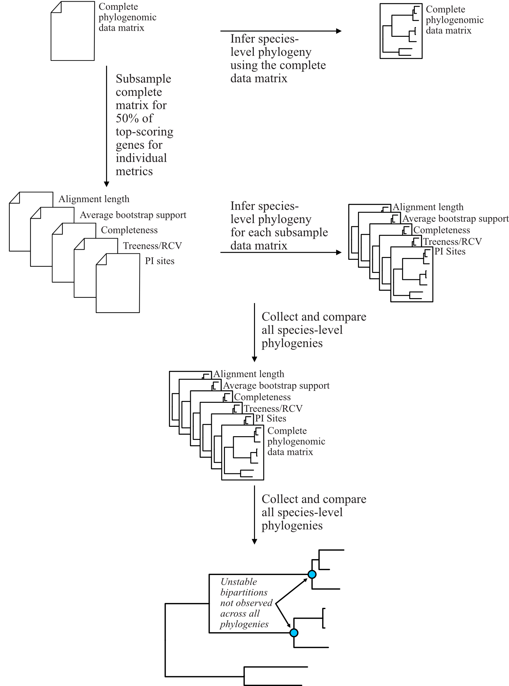
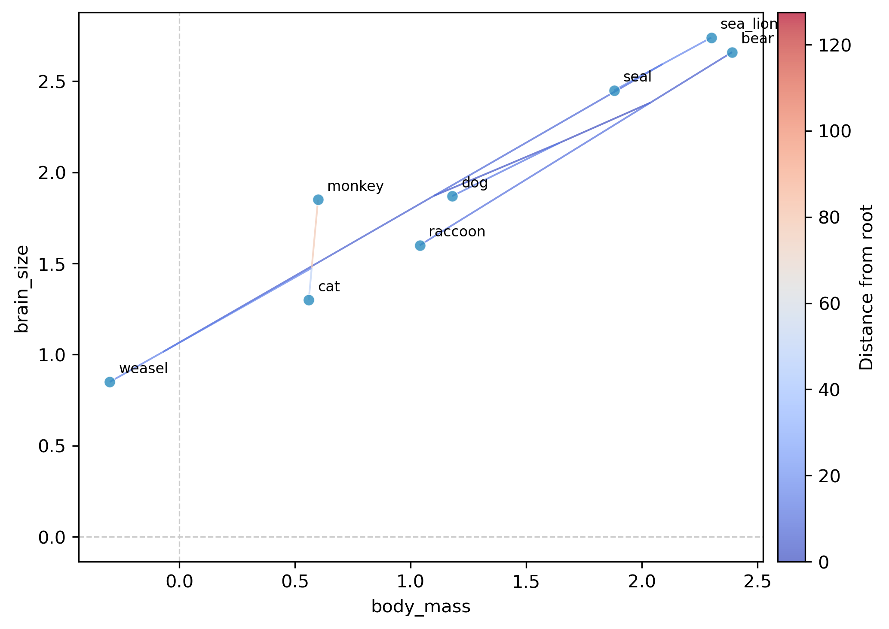
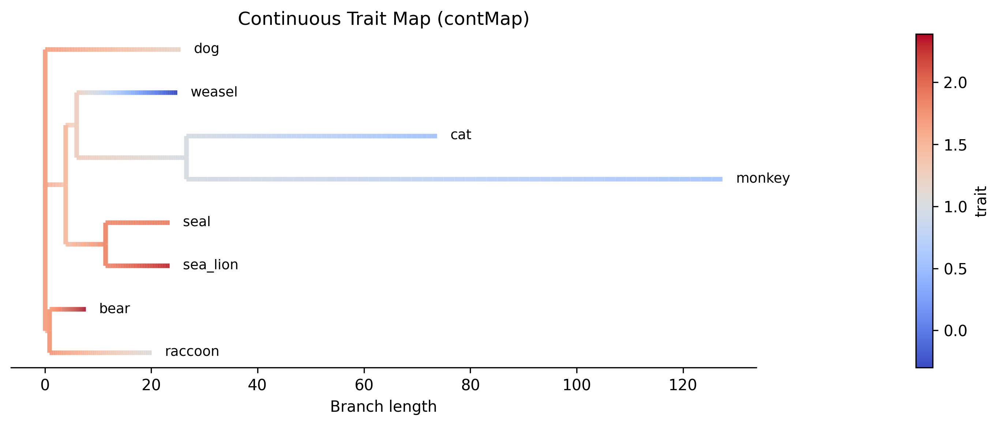
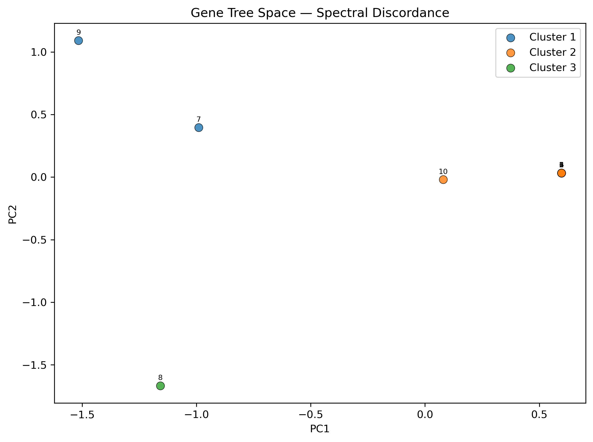
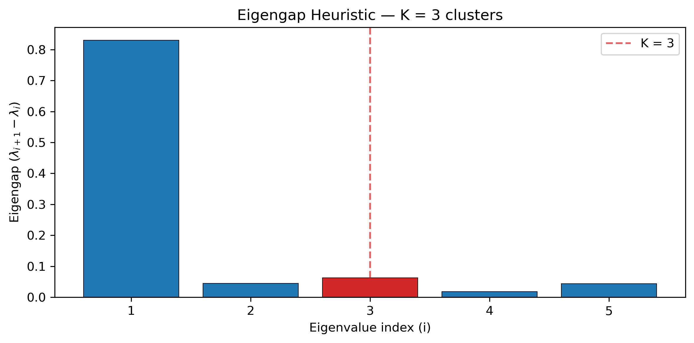
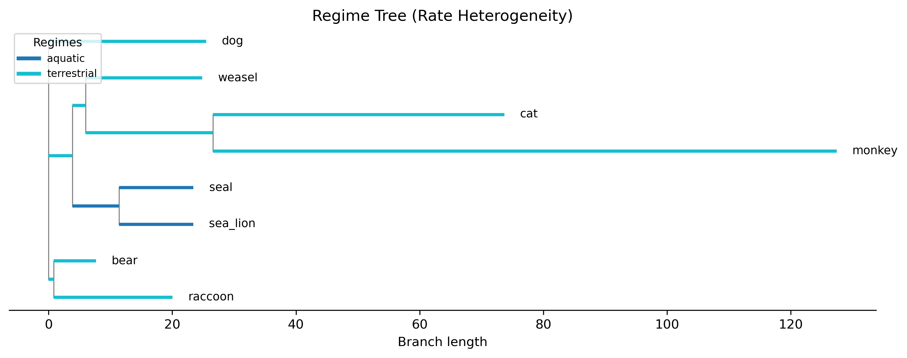
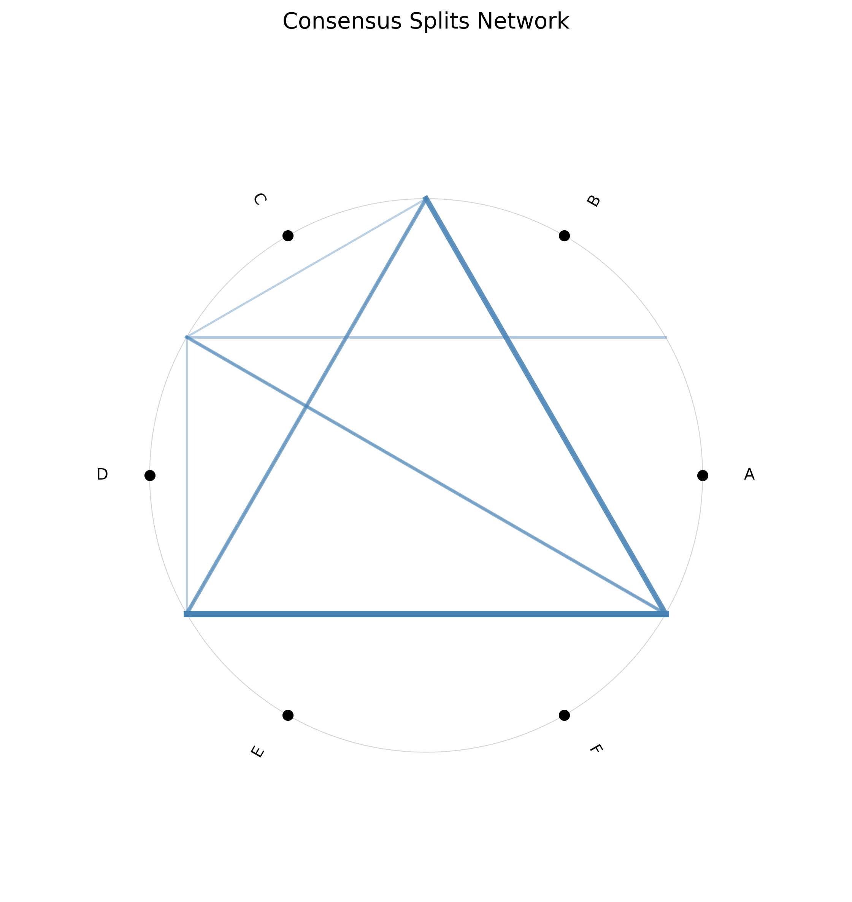
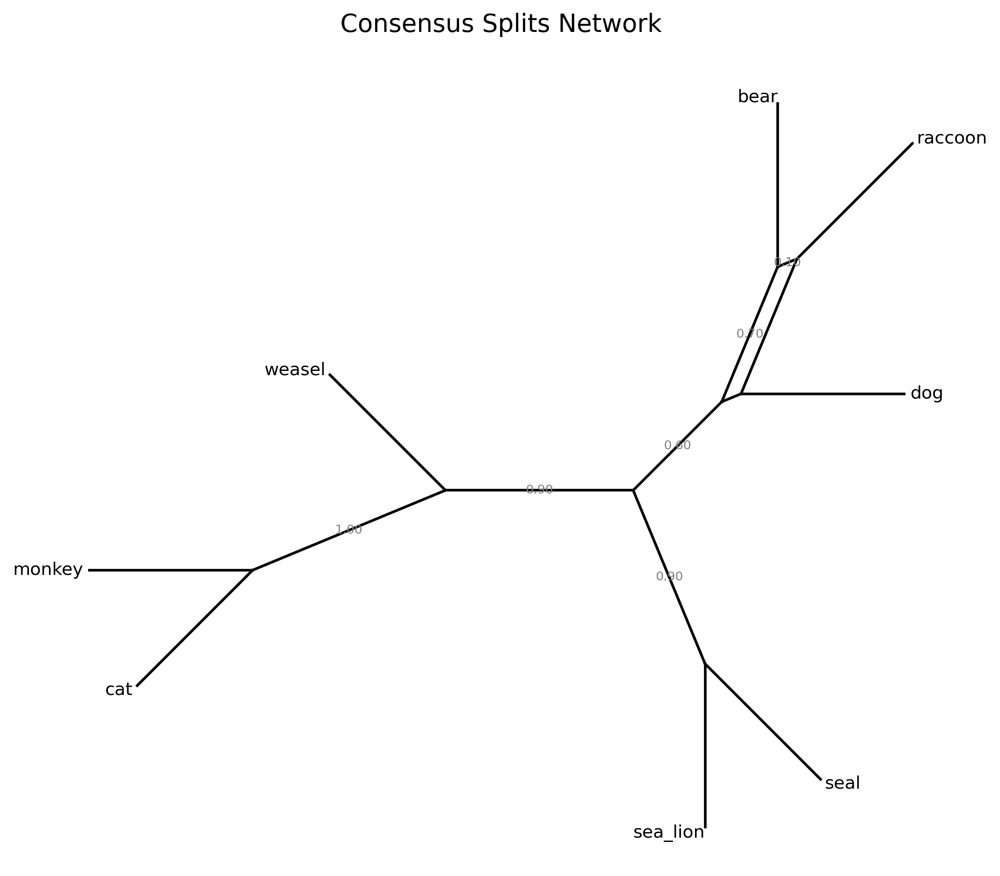
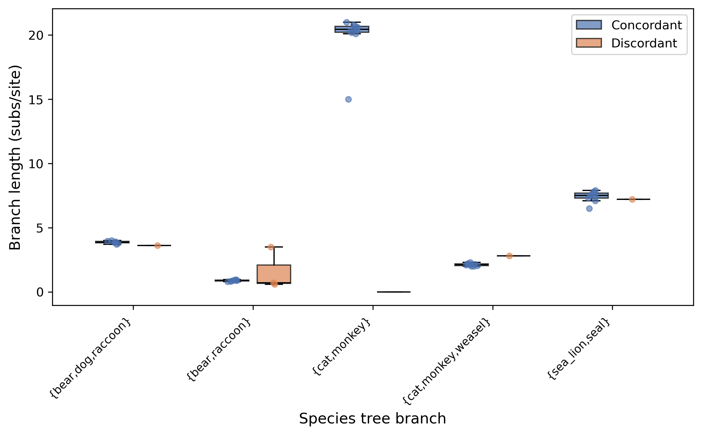
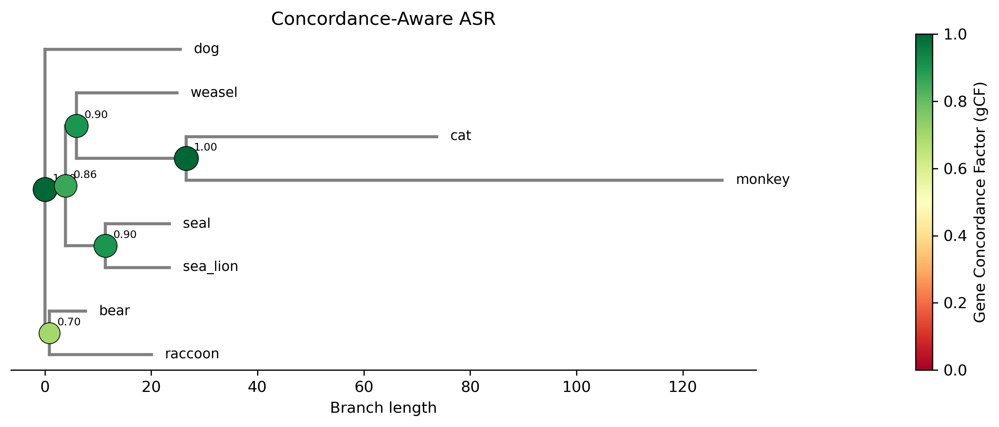

Tutorials
PhyKIT can be used for a multitude of different types of analyses. Documentation here provides a step-by-step outline for how to conduct different types of analyses.
1. Summarizing information content
PhyKIT implements numerous functions that can be used to examine the information content and help researchers summarize information content and identify potential biases in multiple sequence alignments and phylogenies.
Among other uses, one use of summarizing information content is to facilitate subsampling larger phylogenomic data matrices to further explore tree space during species-level tree inference or for divergence time estimation. (Salichos and Rokas 2013; Liu et al. 2017; Smith et al. 2018; Shen et al. 2018 & 2020; Steenwyk et al. 2019; Walker et al. 2019; Li et al. 2020)
The information content summarized in the remainder of this section are associated with strong phylogenetic signal (or robust and accurate tree inference). When subsampling genes, a researcher could take a fraction of the best scoring phylogenies to reinfer species-level relationships or divergence times (e.g., robustly supported phylogenies and genes that do not violate clock-like patterns of evolution).
For example, in Steenwyk et al. 2019, we subsampled the complete phylogenomic data matrix for 50% of genes that had the best score for various matrices. Using the subsampled matrices, we reinferred species trees and compared the topologies across all species-level phylogenies. Bipartitions that were not recovered in all analyses were considered unstable. The following figure depicts the general pipeline we used (note, some of the metrics have been modified following newer insights).
{kind=link}

In this tutorial, we will use the following test multiple sequence alignment and phylogenetic tree, which came
from Steenwyk et al. 2019.
Download test data:
Multiple sequence alignment;
Single-gene phylogeny
Alignment length
Alignment length and the length of an alignment excluding sites with gaps is associated with robust and accurate tree inferences (Shen et al. 2016). Calculate alignment length with the following command:
phykit aln_len Steenwyk_etal_mBio_2019_EOG091N44MS.aln.fa
624
to exclude alignment gaps, use the following option
phykit aln_len_no_gaps Steenwyk_etal_mBio_2019_EOG091N44MS.aln.fa
321 624 51.4423
col1: number of sites without gaps
col2: total number of sites
col3: percentage of sites without gaps
Bipartition support statistics
High average bipartition in a phylogeny is associated with robust bipartition support (Salichos and Rokas 2013; Shen et al. 2016). Thus, genes with high bipartition support values have greater certainty among bipartitions. Calculate bipartition support summary statistics with the following command:
phykit bss Steenwyk_etal_mBio_2019_EOG091N44MS.tre
mean: 88.6437
median: 99
25th percentile: 83.0
75th percentile: 100.0
minimum: 28
maximum: 100
standard deviation: 18.5504
variance: 344.1157
Long branch score
Long branch scores (or LB scores) help determine taxa that may be contributing to long-branch problems (Struck 2014;). Similarly, the standard deviation of LB scores among taxa can be used as a measure of heterogeneity. To calculate summary statistics of LB scores for all taxa in a given phylogeny, use the following command:
phykit lb_score Steenwyk_etal_mBio_2019_EOG091N44MS.tre
mean: -1.1111
median: -14.4566
25th percentile: -17.8686
75th percentile: -3.4048
minimum: -23.7982
maximum: 211.1845
standard deviation: 39.1931
variance: 1536.0987
LB scores of individual taxa are also information to diagnose taxa driving long-branch problems. The lower the values, the less susceptible the taxon is to long-branch problems. To get the LB score of each taxa, use the verbose option:
phykit lb_score Steenwyk_etal_mBio_2019_EOG091N44MS.tre --verbose
Aspergillus_aculeatus -13.7403
Aspergillus_arachidicola -15.382
Aspergillus_parasiticus -15.2214
Aspergillus_sojae -15.2627
Aspergillus_flavus -14.7755
Aspergillus_oryzae -14.7755
Aspergillus_bombycis -11.1987
... ...
Parsimony informative sites
The number of parsimony informative sites in an alignment is associated with strong phylogenetic signal. (Shen et al. 2016; Steenwyk et al. 2020). Calculate the number of parsimony informative sites in an alignment with the following command:
phykit pis Steenwyk_etal_mBio_2019_EOG091N44MS.aln.fa
517 624 82.8526
col1: number of parsimony informative sites
col2: total number of sites
col3: percentage of parsimony informative sites
Saturation
Saturation in a multiple sequence alignments is driven by sites with multiple substitutions and results in the alignment underestimating real genetic distances among taxa. Values of 1 have no saturation and values of 0 are completely saturated by multiple substitutions (Philippe et al. 2011). Estimate saturation with the following command:
phykit sat -a Steenwyk_etal_mBio_2019_EOG091N44MS.aln.fa -t Steenwyk_etal_mBio_2019_EOG091N44MS.tre
0.3017 0.6983
Treeness divided by relative composition variability
Treeness divided by relative composition variability (treeness/RCV) is associated with strong phylogenetic signal. Higher treeness and lower RCV values are indicative of a lower potential for bias (composition-based or otherwise) and a lower degree of composition bias. Thus, higher treeness/RCV values are indicative of genes less susceptible to composition and other biases. (Lanyon 1988; Phillips and Penny 2003; Shen et al. 2016). Calculate treeness/RCV using the following command:
phykit toverr -a Steenwyk_etal_mBio_2019_EOG091N44MS.aln.fa -t Steenwyk_etal_mBio_2019_EOG091N44MS.tre
5.0727 0.5136 0.1013
col1: treeness/RCV
col2: treeness
col3: RCV
To individually calculate treeness, a measure of signal-to-noise among branch lengths (Lanyon 1988; Phillips and Penny 2003), and RCV, a measure of composition bias (Phillips and Penny 2003), use the following commands:
# calculate treeness
phykit tness Steenwyk_etal_mBio_2019_EOG091N44MS.tre
0.5136
# calculate RCV
phykit rcv Steenwyk_etal_mBio_2019_EOG091N44MS.aln.fa
0.1013
Variable sites
The number of variable sites in an alignment is associated with strong phylogenetic signal. (Shen et al. 2016). Calculate the number of variable sites with the following command:
phykit vs Steenwyk_etal_mBio_2019_EOG091N44MS.aln.fa
555 624 88.9423
col1: number of variable sites
col2: total number of sites
col3: percentage of variable sites
2. Evaluating gene-gene covariation
Identifying genes that significantly covary (or coevolve) with one another is known to accurately and sensitively identify genes with shared functions, are coexpressed, and/or are part of the same multimeric complexes (Sato et al. 2005; Clark et al. 2012). Furthermore, gene-gene covariation serves as a powerful evolution-based genetic screen for predicting gene function (Brunette et al. 2019).
PhyKIT implements a mirror-tree-based method to identify genes that covary with one another. In principle, PhyKIT determines if two trees have similar branch length properties throughout the phylogeny. Thus, each input phylogeny must have the same topology. However, there are other steps that must be done prior to evaluating covariation between two genes.
To provide a comprehensive tutorial, we will start with the sequence alignments for three genes and their constrained tree topologies that match the putative species tree from Shen et al. 2020.
Download test data:
gene_gene_covariation_tutorial.tar.gz
Step 0: Prepare data
The mirror tree method for determining significant gene-gene covariation requires that both input phylogenies have the same topology. As a result, gene trees must be constrained to the species tree, which is typically inferred from whole genome or proteome data. In the present tutorial, the species tree has already been inferred. Additionally, the guide trees used to constrain the gene trees have been generated. These trees were generated by pruning the species tree to match the taxon representation of the sequences in the multiple sequence alignment.
Step 1: Estimate gene tree branch lengths
To infer the constrained tree, we will use IQ-TREE2. The species tree (or guide tree) is specified with the -g argument. Lastly, the best-fitting substitution model was specified according to what was reported in Shen et al. 2020 supplementary data; however, if the best-fitting model is unknown, this will have to be determined prior to estimating gene tree branch lengths.
Estimate the gene tree branch lengths using the following commands:
# infer constrain trees
iqtree2 -s Shen_etal_SciAdv_2020_NDC80.fa -te Shen_etal_SciAdv_2020_NDC80.constrained.tre -pre Shen_etal_SciAdv_2020_NDC80 -m JTT+G4+F -keep-ident
iqtree2 -s Shen_etal_SciAdv_2020_NUF2.fa -te Shen_etal_SciAdv_2020_NUF2.constrained.tre -pre Shen_etal_SciAdv_2020_NUF2 -m LG+G4 -keep-ident
iqtree2 -s Shen_etal_SciAdv_2020_SEC7.fa -te Shen_etal_SciAdv_2020_SEC7.constrained.tre -pre Shen_etal_SciAdv_2020_SEC7 -m LG+G4 -keep-ident
Step 2: Root constrain trees
To ensure PhyKIT traverses each tree the same, root each tree using the outgroup taxa. PhyKIT has a function for rooting and takes as input a single column file with the names of the outgroup taxa. For sake of simplicity, I have provided the necessary input files.
Root the trees with the inferred branch lengths using the following commands:
# root trees
pk_root Shen_etal_SciAdv_2020_NUF2.treefile -r Shen_etal_SciAdv_2020_NUF2_taxa_for_rooting.txt -o Shen_etal_SciAdv_2020_NUF2.treefile.rooted
pk_root Shen_etal_SciAdv_2020_SEC7.treefile -r Shen_etal_SciAdv_2020_SEC7_taxa_for_rooting.txt -o Shen_etal_SciAdv_2020_SEC7.treefile.rooted
pk_root Shen_etal_SciAdv_2020_NDC80.treefile -r Shen_etal_SciAdv_2020_NDC80_taxa_for_rooting.txt -o Shen_etal_SciAdv_2020_NDC80.treefile.rooted
Step 3: Evaluate gene-gene covariation
When determining gene-gene covariation, it is best to use a high significance threshold for coevolutionary coefficients. Here, we will use a threshold of 0.5; however, I recommend users explore their own data and distribution of coevolutionary coefficients.
To evaluate gene-gene covariation, execute the following commands:
# Evaluate gene-gene covariation between NUF2 and SEC7
phykit cover Shen_etal_SciAdv_2020_NUF2.treefile.rooted Shen_etal_SciAdv_2020_SEC7.treefile.rooted -r Shen_etal_SciAdv_2020_species_tree.tre
0.1885 0.0
# Evaluate gene-gene covariation between NDC80 and SEC7
phykit cover Shen_etal_SciAdv_2020_NDC80.treefile.rooted Shen_etal_SciAdv_2020_SEC7.treefile.rooted -r Shen_etal_SciAdv_2020_species_tree.tre
0.2105 0.0
Given our thresholds, neither NUF2 nor NDC80 significantly covary with SEC7. Next, evaluate gene-gene covariation between NUF2 and NDC80.
# Evaluate gene-gene covariation between NUF2 and NDC80
phykit cover Shen_etal_SciAdv_2020_NUF2.treefile.rooted Shen_etal_SciAdv_2020_NDC80.treefile.rooted -r Shen_etal_SciAdv_2020_species_tree.tre
0.6693 0.0
These two genes significantly covary with one another. This raises the hypothesis that these two genes have shared function. A literature- based examination of these genes reveals the encoded proteins are part of the same kinetochore-associated complex termed the NDC80 complex. Thus, PhyKIT is useful for determining gene-gene covariation, which can be driven by shared function, coexpression, and/or are part of the same multimeric complexes.
3. Identifying signatures of rapid radiations
Signatures of rapid radiations or diversification events can be identified by pinpointing polytomies in a putative species tree (Sayyari and Mirarab 2018; One Thousand Plant Transcriptomes Initiative 2019; Li et al. 2020).
PhyKIT uses a gene-based approach to evaluate polytomies. In other words, PhyKIT will determine what topology each gene supports. Thereafter, PhyKIT will conduct a chi-squared test to determine if there is equal support among gene trees for the various topologies. In the chi-squared test, the null hypothesis is that there is equal support among gene trees for the various topologies and the alternative hypothesis is that there is unequal support for the various topologies. Thus, failing to reject the null hypothesis would indicate that there is a polytomy where as rejecting the null hypothesis would indicate there is no polytomy. The various topologies examined by PhyKIT are determined by the groups file. Formatting this file will be explained later.
To demonstrate how to identify polytomies, we will use a subset of 250 gene phylogenies from Steenwyk et al. 2019.
Download test data:
polytomy_tutorial.tar.gz
Step 0: Prepare data
For this tutorial, the data has already been formatted for the user. There are two input files for the polytomy testing function:
a file that specifies the location of gene trees
a file that specifies the groups to test
Thus, this tutorial assumes that gene phylogenies have already been inferred and the area of the phylogeny that the user wishes to test for a polytomy has already been identified.
Examination of the first file reveals that that it is a single column file that specifies the pathing of gene phylogenies to use during polytomy testing. Examination of the second file reveals that groups are specified using a tab-separated five column file.
column 1: an identifier for the test, which is not used by PhyKIT. Instead, this column is intended to be for the user to write any keywords or notes that can help remind them of what they were testing.
column 2-4: the tip names in the groups. Each column represents a single group to conduct polytomy testing for. If a group has multiple taxa, separate each tip name using a semi-colon ';'. For example, in groups_file0.txt there is one group with Aspergillus_persii;Aspergillus_sclerotiorum wherein this group has two taxa, Aspergillus_persii and Aspergillus_sclerotiorum.
column 5: the outgroup taxa. This column specifies the name of outgroup taxa, which are used to root the gene trees prior to determining what topology they support.
Step 1: Conduct polytomy test
Among the groups that have already been predetermined for the user, we will first conduct a polytomy test for groups_file0.txt. To execute the polytomy test, use the following command:
phykit ptt -t filamentous_fungi_250_trees.txt -g groups_file0.txt
Gene Support Frequency Results
==============================
chi-squared: 19.425
p-value: 6.1e-05
total genes: 240
0-1: 103
0-2: 49
1-2: 88
Note, if you are getting an error, it may be due to improper pathing in filamentous_fungi_250_trees.txt. Please check this file and modify it accordingly.
We will now go over the output of PhyKIT. PhyKIT will report the chi-squared value, the p value, the total number of genes used, followed by the support of sister relationships examined. Here, the chi-squared value is very high and the p value is very low indicating that the null hypothesis was rejected and that there is no evidence of a polytomy. The total number of genes used during the polytomy test was 240. However, you may have noticed that there were 250 genes used as input. This discrepancy is not an error but may be caused by two different reasons. (1) 10 genes were unable to be used due to incomplete taxon representation in the groups and (2) PhyKIT can account for gene phylogenies uncertainty (i.e., gene phylogenies with collapsed bipartitions), which may render the support of a given gene tree to be uncertain and therefore not be used during polytomy testing.
Next, the section 0-1, 0-2, and 1-2 refers to the sister relationships between the groups. Group 0 is specified in column 2 of the groups file while group 1 and group 2 are specified in columns 3 and 4, respectively. Thus, 0-1 refers to the following topology (((0,1),2),outgroup); whereas 0-2 and 1-2 refers to the following topologies (((0,2),1),outgroup); and (((1,2),0),outgroup);, respectively. PhyKIT identified that 103 gene phylogenies support (((0,1),2),outgroup); whereas 49 and 88 gene phylogenies support the topologies (((0,2),1),outgroup); and (((1,2),0),outgroup);, respectively.
Next, conduct a polytomy test using the other group file using the following command:
phykit ptt -t filamentous_fungi_250_trees.txt -g groups_file1.txt
Gene Support Frequency Results
==============================
chi-squared: 0.129
p-value: 0.937521
total genes: 248
0-1: 84
0-2: 84
1-2: 80
In contrast to the previous test, the chi-squared value is very low and the p value is very high indicating a failure to reject the null hypothesis. Thus, there is a signature of rapid radiation or diversification event for these groups. Additional details provided by PhyKIT reveal 248 genes were used during the polytomy test and that there is nearly equal support for the various topologies.
Taken together, this tutorial reveals how to identify signatures of rapid radiation or diversification events in phylogenomic data.
4. Evaluating the accuracy of a multiple sequence alignment
Evaluating the accuracy of multiple sequence alignments is an appropriate way to benchmark multiple sequence alignment strategies. Two popular methods to assess multiple sequence alignment accuracy are sum-of-pairs score and column score, which were introduced by Thompson et al., Nucleic Acids Research (1999), doi: 10.1093/nar/27.13.2682. Sum-of-pairs is calculated by summing the correctly aligned residue pairs over all pairs of sequences. Column score is calculated by summing the correctly aligned columns over all columns in an alignment. Both metrics range from 0 to 1 and higher values indicate more accurate alignments. Correctly aligned pairs or columns require knowing some ground truth of what the correct alignment is. Thus, a reference alignment that is perfectly (or near-perfectly) aligned is required. A reference alignment can be generated using simulations or be obtained from publicly available databases such as BAliBASE 4 (http://www.lbgi.fr/balibase/). For this tutorial we will use a reference alignment from BAliBASE.
Download test data:
msa_accuracy.tar.gz
Step 0: Generate query alignments
In the msa_accuracy directory, there are two fasta files: BBA0001_query.faa, an unaligned set of sequences and BBA0001_reference.faa, the reference alignment. We will align BBA0001_query.faa using three different strategies implemented in Mafft, v.7.475 (https://mafft.cbrc.jp/alignment/software/), and evaluate the accuracy of each strategy.
To do so, please ensure Mafft is installed and then execute the following commands:
# first alignment
mafft --localpair BBA0001_query.faa > BBA0001_query.localpair.faa
# second alignment
mafft --genafpair BBA0001_query.faa > BBA0001_query.genafpair.faa
# third alignment
mafft --globalpair BBA0001_query.faa > BBA0001_query.globalpair.faa
To gain some initial insight as to whether the alignments differ, we can look at the length of each alignment using the aln_len function
for i in $(ls *pair.faa) ; do phykit aln_len $i ; done
1560
1464
1497
However, alignment length is not a measurement of accuracy. Thus, we will score each alignment using the sum_of_pairs_score and column_score functions.
Step 1: Score each alignment
For both functions, the first argument is the query alignment and the -r/\-\-reference argument specifies the reference alignment. We will programmatically score each alignment using the same for loop that was used to calculate alignment length.
echo -e "BAliBASE_id_and_aln_strategy\tsop\tcs"
for i in $(ls *pair.faa)
do
sop=$(phykit sum_of_pairs_score $i -r BBA0001_reference.faa)
cs=$(phykit column_score $i -r BBA0001_reference.faa)
echo -e "$i\t$sop\t$cs"
done
BAliBASE_id_and_aln_strategy sop cs
BBA0001_query.genafpair.faa 0.8964 0.2943
BBA0001_query.globalpair.faa 0.9025 0.292
BBA0001_query.localpair.faa 0.8992 0.2959
Examination of the output reveals that the globalpair strategy has more correctly aligned pairs because it has a higher sum-of-pairs score whereas the localpair strategy has more correctly aligned columns. Of note, the column scores are generally low, which reflects a potential limitation of column score wherein column score is sensitive to alignment errors.
In summary, calculating sum-of-pairs score and column score can help assess the accuracy of multiple sequence alignment strategies.
5. Mapping the evolutionary history of discrete traits
A common question in comparative biology is: how did a discrete trait, such as diet, habitat, or reproductive strategy, evolve across a phylogeny? Simply labeling tips on a tree does not tell us when or how often transitions between states occurred. Stochastic character mapping (Huelsenbeck et al. 2003; Bollback 2006) addresses this by simulating plausible evolutionary histories of a discrete trait along each branch, conditioned on the observed tip states and a fitted substitution model. This approach is widely used in macroevolutionary studies to quantify the tempo and mode of trait evolution (O'Meara 2012).
Hypothetical study question. Suppose we are studying a group of eight mammal species and want to understand how diet (carnivore, herbivore, or omnivore) has evolved across the phylogeny. Specifically, we want to know: (1) Is the transition rate between all dietary states equal, or are some transitions more frequent than others? (2) How much evolutionary time has been spent in each dietary state? (3) How many transitions between states occurred on average?
PhyKIT's stochastic_character_map command (alias: simmap) lets us answer these
questions directly from the command line.
In this tutorial, we will use test data included with PhyKIT: an eight-taxon mammal phylogeny
and a tab-delimited file assigning each species to a dietary category.
Download test data:
Mammal phylogeny;
Discrete trait data
Step 0: Prepare data
Two input files are needed: a phylogenetic tree in Newick format and a tab-delimited trait file with a header row. The trait file looks like this:
taxon diet
raccoon carnivore
bear carnivore
sea_lion carnivore
seal herbivore
monkey herbivore
cat omnivore
weasel omnivore
dog omnivore
The first column is the taxon name (must match the tree tip labels) and subsequent columns
contain discrete trait values. You specify which column to use with the -c/--trait flag.
Lines starting with # are treated as comments and blank lines are ignored.
Both files are included in the PhyKIT test suite at tests/sample_files/tree_simple.tre and
tests/sample_files/tree_simple_discrete_traits.tsv.
Step 1: Fit a substitution model and run stochastic mapping
First, run stochastic character mapping with the default equal-rates (ER) model and 100 simulations:
phykit simmap \
-t tests/sample_files/tree_simple.tre \
-d tests/sample_files/tree_simple_discrete_traits.tsv \
-c diet \
-n 100 \
--seed 42
This produces the following output:
Stochastic Character Mapping (SIMMAP)
Model: ER
Number of simulations: 100
Fitted Q matrix:
carnivore herbivore omnivore
carnivore -0.1138 0.0569 0.0569
herbivore 0.0569 -0.1138 0.0569
omnivore 0.0569 0.0569 -0.1138
Log-likelihood: -8.7874
Mean dwelling times:
carnivore 99.08 (35.7%)
herbivore 89.18 (32.2%)
omnivore 89.02 (32.1%)
Mean transitions:
carnivore -> herbivore: 5.51
carnivore -> omnivore: 5.69
herbivore -> carnivore: 5.48
herbivore -> omnivore: 5.37
omnivore -> carnivore: 4.94
omnivore -> herbivore: 4.89
Total: 31.88
Interpreting the output. The fitted Q matrix shows the instantaneous rates of transition between states. Under the ER model, all off-diagonal rates are equal (0.0569 per unit branch length). The log-likelihood of -8.79 is the maximized log-likelihood of the data given the model.
The mean dwelling times tell us how much total evolutionary time (summed across all branches) was spent in each state, averaged over all 100 simulated histories. Here, the three dietary states have roughly equal dwelling times, reflecting the ER model's symmetry and the distribution of states across the tree.
The mean transition counts show how many times each type of state change occurred on average. These are averaged across 100 stochastic maps.
Step 2: Compare substitution models
Is the equal-rates model adequate, or do different transitions have different rates? We can compare the ER model with the all-rates-different (ARD) model:
phykit simmap \
-t tests/sample_files/tree_simple.tre \
-d tests/sample_files/tree_simple_discrete_traits.tsv \
-c diet \
-m ARD \
-n 100 \
--seed 42
You can also try the symmetric (SYM) model, which assumes forward and reverse rates between any pair of states are equal but allows different pairs to differ:
phykit simmap \
-t tests/sample_files/tree_simple.tre \
-d tests/sample_files/tree_simple_discrete_traits.tsv \
-c diet \
-m SYM \
-n 100 \
--seed 42
Compare the log-likelihoods across models to assess fit. Because ARD has more parameters than SYM, which has more than ER, a likelihood ratio test or AIC comparison can be used to determine whether the additional parameters are justified.
Step 3: Generate a stochastic character map plot
To visualize one of the simulated character histories on the phylogeny, use the --plot
flag:
phykit simmap \
-t tests/sample_files/tree_simple.tre \
-d tests/sample_files/tree_simple_discrete_traits.tsv \
-c diet \
-n 100 \
--seed 42 \
--plot simmap_diet.png
This generates a horizontal phylogram with branches colored by the mapped character state. Each branch segment is colored according to the state occupied during that interval, reflecting one of the simulated character histories. A legend maps colors to states.
Step 4: Export results as JSON
For downstream analysis or scripting, results can be exported as JSON:
phykit simmap \
-t tests/sample_files/tree_simple.tre \
-d tests/sample_files/tree_simple_discrete_traits.tsv \
-c diet \
-n 100 \
--seed 42 \
--json
The JSON output includes the fitted Q matrix, log-likelihood, state list, mean dwelling times
and proportions, and mean transition counts. This can be parsed with standard JSON tools
(e.g., jq, Python's json module) for further analysis.
Step 5: Ensure reproducibility
The --seed flag ensures that the stochastic simulations are reproducible. Running the same
command with the same seed will produce identical results. This is important for
reproducibility in publications. Omitting --seed produces different results each time due
to the stochastic nature of the simulations.
Summary
In this tutorial, we used stochastic character mapping to reconstruct the evolutionary history of diet across a mammal phylogeny. The key steps were: (1) fitting a continuous-time Markov chain rate matrix to estimate transition rates, (2) comparing equal-rates and all-rates-different models to assess whether transition rates vary, (3) simulating character histories to estimate dwelling times and transition counts, and (4) plotting a stochastic character map for visualization.
For methodological details, see
Huelsenbeck et al. (2003) and
Bollback (2006).
The R equivalent is phytools::make.simmap()
(Revell 2012).
6. Testing for phylogenetic signal in continuous traits
A fundamental question in comparative biology is whether closely related species resemble each other more than expected by chance — a pattern known as phylogenetic signal (Blomberg et al. 2003; Pagel 1999). Quantifying phylogenetic signal helps determine whether phylogenetic comparative methods (e.g., PGLS, phylogenetic PCA) are necessary for a given trait, and provides insight into the evolutionary processes shaping trait variation (Münkemüller et al. 2012).
Hypothetical study question. Suppose we are studying body mass evolution across eight mammal species and want to know: does body mass exhibit significant phylogenetic signal? In other words, do closely related species tend to have more similar body masses than species drawn at random from the tree?
PhyKIT's phylogenetic_signal command (aliases: phylo_signal, ps) implements two
widely used measures: Blomberg's K and Pagel's lambda.
In this tutorial, we will use the test data included with PhyKIT: an eight-taxon mammal
phylogeny and a tab-delimited trait file containing log-transformed body mass values.
Download test data:
Mammal phylogeny;
Continuous trait data
Step 0: Prepare data
Two input files are needed: a phylogenetic tree in Newick format and a tab-delimited trait
file with two columns (taxon name and trait value). Lines starting with # are treated
as comments. The trait file looks like this:
# Trait data for tree_simple.tre taxa
# body mass (kg, log-transformed)
raccoon 1.04
bear 2.39
sea_lion 2.30
seal 1.88
monkey 0.60
cat 0.56
weasel -0.30
dog 1.18
Both files are included in the PhyKIT test suite at tests/sample_files/tree_simple.tre and
tests/sample_files/tree_simple_traits.tsv.
Step 1: Calculate Blomberg's K
Blomberg's K compares the observed trait variance partitioned across the phylogeny to the expectation under Brownian motion. K = 1 indicates trait evolution consistent with Brownian motion; K < 1 suggests less phylogenetic signal than expected (e.g., convergent evolution); K > 1 suggests stronger signal than expected (e.g., trait conservatism within clades).
Statistical significance is assessed via a permutation test that shuffles trait values among tips.
phykit phylogenetic_signal \
-t tests/sample_files/tree_simple.tre \
-d tests/sample_files/tree_simple_traits.tsv
0.5842 0.474
col1: Blomberg's K statistic
col2: p-value (permutation test, 1000 permutations)
Interpretation. K = 0.58 (< 1), suggesting that body mass shows less phylogenetic signal than expected under pure Brownian motion in this clade. The p-value of 0.47 is non-significant, meaning we cannot reject the null hypothesis that there is no phylogenetic signal. With only 8 taxa, statistical power is limited, so this result should be interpreted cautiously.
Step 2: Calculate Pagel's lambda
Pagel's lambda scales the off-diagonal elements of the phylogenetic variance-covariance matrix. Lambda = 1 indicates strong phylogenetic signal (consistent with Brownian motion); lambda = 0 indicates no phylogenetic signal (traits evolve independently of phylogeny). Significance is assessed via a likelihood ratio test comparing the fitted lambda model to a model with lambda fixed at 0.
phykit phylogenetic_signal \
-t tests/sample_files/tree_simple.tre \
-d tests/sample_files/tree_simple_traits.tsv \
-m lambda
1.0 -11.5697 0.7165
col1: estimated lambda
col2: log-likelihood of the fitted model
col3: p-value (likelihood ratio test)
Interpretation. Lambda = 1.0 indicates a maximum-likelihood estimate consistent with Brownian motion. However, the LRT p-value of 0.72 is non-significant, meaning the fitted model does not significantly improve over the null (lambda = 0). Again, with 8 taxa, power is limited.
Step 3: Export results as JSON
For scripting or downstream analysis, use --json:
phykit phylogenetic_signal \
-t tests/sample_files/tree_simple.tre \
-d tests/sample_files/tree_simple_traits.tsv \
--json
{"K": 0.5842, "p_value": 0.474, "permutations": 1000}
phykit phylogenetic_signal \
-t tests/sample_files/tree_simple.tre \
-d tests/sample_files/tree_simple_traits.tsv \
-m lambda \
--json
{"lambda": 1.0, "log_likelihood": -11.5697, "p_value": 0.7165}
Summary
In this tutorial, we used two measures of phylogenetic signal — Blomberg's K and Pagel's lambda — to assess whether body mass evolution in a mammal clade is structured by phylogenetic relationships. Both measures can help researchers decide whether phylogenetic comparative methods are needed for their data and provide insight into the tempo and mode of trait evolution.
For methodological details, see
Blomberg et al. (2003) and
Pagel (1999).
The R equivalent is phytools::phylosig()
(Revell 2012).
7. Phylogenetic ordination for multivariate trait analysis
When analyzing multiple continuous traits across species, standard ordination methods ignore the phylogenetic non-independence among species: closely related species share evolutionary history and thus cannot be treated as independent data points. Phylogenetic ordination addresses this by incorporating the phylogenetic variance-covariance matrix, producing ordinations that properly account for shared ancestry.
PhyKIT's phylogenetic_ordination command (aliases: phylo_ordination, ordination,
ord, phylo_pca, phyl_pca, ppca, phylo_dimreduce, dimreduce, pdr)
supports three ordination methods:
PCA (default): phylogenetic PCA (Revell 2009) with Brownian motion or Pagel's lambda correction, and covariance or correlation modes
t-SNE: phylogenetically-corrected t-SNE for nonlinear dimensionality reduction
UMAP: phylogenetically-corrected UMAP for nonlinear dimensionality reduction
Hypothetical study question. Suppose we have measured body mass, brain size, and longevity for eight mammal species and want to identify the major axes of morphological variation while accounting for phylogenetic relationships. Which traits load most heavily on the primary axes? Do any species emerge as outliers after phylogenetic correction? Are there nonlinear patterns that PCA might miss?
Download test data:
Mammal phylogeny;
Multi-trait data
Step 0: Prepare data
Two input files are needed: a phylogenetic tree and a tab-delimited multi-trait file with a header row. The trait file looks like this:
taxon body_mass brain_size longevity
raccoon 1.04 1.60 1.28
bear 2.39 2.66 1.36
sea_lion 2.30 2.74 1.46
seal 1.88 2.45 1.60
monkey 0.60 1.85 2.00
cat 0.56 1.30 1.18
weasel -0.30 0.85 1.04
dog 1.18 1.87 1.20
Both files are included in the PhyKIT test suite at tests/sample_files/tree_simple.tre
and tests/sample_files/tree_simple_multi_traits.tsv.
Step 1: Run phylogenetic PCA with Brownian motion
The default method is PCA with Brownian motion for the phylogenetic covariance structure:
phykit phylogenetic_ordination \
-t tests/sample_files/tree_simple.tre \
-d tests/sample_files/tree_simple_multi_traits.tsv
Eigenvalues:
PC1 PC2 PC3
eigenvalue 0.080180 0.002924 0.000308
proportion 0.961261 0.035052 0.003687
Loadings:
PC1 PC2 PC3
body_mass -0.734739 -0.422613 -0.530619
brain_size -0.527400 -0.136064 0.838651
longevity -0.426623 0.896038 -0.122915
Scores:
PC1 PC2 PC3
bear -0.978191 -0.029290 -0.026787
cat 1.442009 0.176467 -0.093072
dog 0.651723 -0.091427 0.046142
monkey 0.640466 1.097251 0.208068
raccoon 0.867121 0.067199 -0.114611
sea_lion -0.860400 -0.199268 0.115102
seal -0.522584 0.277539 0.059107
weasel 2.639715 -0.088806 0.080512
Interpretation. PC1 explains 96.1% of the total phylogenetically-corrected variance and loads most heavily on body mass (-0.73), followed by brain size (-0.53) and longevity (-0.43). This suggests that a single axis of overall body size captures most of the morphological variation. Weasel (score = 2.64) and cat (1.44) are the strongest outliers on PC1, reflecting their small body size, brain size, and short longevity relative to the larger-bodied species. PC2 (3.5% variance) is dominated by longevity (0.90), separating monkey (high longevity) from the other species.
Step 2: Use correlation mode
When traits are measured on different scales, correlation-mode PCA is often preferred because it standardizes each trait to unit variance before decomposition:
phykit ordination \
-t tests/sample_files/tree_simple.tre \
-d tests/sample_files/tree_simple_multi_traits.tsv \
--mode corr
Eigenvalues:
PC1 PC2 PC3
eigenvalue 2.849006 0.140247 0.010747
proportion 0.949669 0.046749 0.003582
Correlation-mode eigenvalues sum to the number of traits (3.0) rather than total variance. The loadings and scores change accordingly, but the overall pattern remains similar.
Step 3: Estimate Pagel's lambda jointly
Instead of assuming pure Brownian motion, the lambda correction jointly estimates Pagel's lambda across all traits, downweighting the phylogenetic covariance structure if the data warrant it:
phykit ordination \
-t tests/sample_files/tree_simple.tre \
-d tests/sample_files/tree_simple_multi_traits.tsv \
--correction lambda \
--json
The JSON output includes the estimated lambda value, eigenvalues, loadings, scores, and log-likelihood. A lambda near 1 indicates that Brownian motion adequately describes the covariance structure, while a lambda near 0 suggests traits evolved independently of phylogeny.
Step 4: Generate a PCA plot
To visualize the ordination, use the --plot flag:
phykit ordination \
-t tests/sample_files/tree_simple.tre \
-d tests/sample_files/tree_simple_multi_traits.tsv \
--plot --plot-output ppca_plot.png
This generates a scatter plot of PC1 vs PC2 with taxon labels and variance-explained percentages on the axes.
Step 5: Nonlinear ordination with t-SNE and UMAP
While PCA provides a linear ordination, nonlinear methods like t-SNE and UMAP can
reveal additional structure in high-dimensional trait spaces. The same GLS-centering
is applied before the nonlinear embedding. For t-SNE and UMAP, the phylogeny is
overlaid on the plot by default (edges colored by distance from root). Use
--no-plot-tree to disable this, or --tree-color-by to color edges by a trait
instead of distance from root. UMAP axes are unlabeled since the coordinates are
not directly interpretable.
Running t-SNE:
phykit ordination \
-t tests/sample_files/tree_simple.tre \
-d tests/sample_files/tree_simple_multi_traits.tsv \
--method tsne --seed 42 --plot

Running UMAP:
phykit ordination \
-t tests/sample_files/tree_simple.tre \
-d tests/sample_files/tree_simple_multi_traits.tsv \
--method umap --seed 42 --plot

Using Pagel's lambda correction with t-SNE:
phykit ordination \
-t tests/sample_files/tree_simple.tre \
-d tests/sample_files/tree_simple_multi_traits.tsv \
--method tsne --correction lambda --seed 42 --json
Coloring phylogeny edges by a trait (e.g., body_mass) instead of distance from root:
phykit ordination \
-t tests/sample_files/tree_simple.tre \
-d tests/sample_files/tree_simple_multi_traits.tsv \
--method tsne --plot --tree-color-by body_mass --seed 42
Disabling the phylogeny overlay:
phykit ordination \
-t tests/sample_files/tree_simple.tre \
-d tests/sample_files/tree_simple_multi_traits.tsv \
--method umap --plot --no-plot-tree --seed 42
Summary
In this tutorial, we used phylogenetic ordination to identify the major axes of morphological variation among mammal species while accounting for shared evolutionary history. The key steps were: (1) running PCA under Brownian motion, (2) comparing covariance and correlation modes, (3) jointly estimating Pagel's lambda, (4) visualizing the ordination, and (5) exploring nonlinear structure with t-SNE and UMAP.
For PCA methodological details, see
Revell (2009).
The R equivalent is phytools::phyl.pca()
(Revell 2012).
8. Visualizing trait evolution with phylomorphospace
Phylomorphospace plots overlay the phylogeny onto a two-dimensional trait space, connecting species to their ancestors via edges that trace the evolutionary trajectory of traits (Sidlauskas 2008). Internal node positions are estimated by maximum-likelihood ancestral state reconstruction. This visualization reveals how lineages have moved through morphospace over evolutionary time — showing convergence, divergence, and the overall geometry of trait evolution.
Hypothetical study question. Suppose we want to visualize how body mass and brain size have coevolved across our eight mammal species. Do closely related species cluster together in trait space? Have any lineages converged on similar body mass–brain size combinations despite being distantly related?
PhyKIT's phylomorphospace command (aliases: phylomorpho, phmo) generates these
plots directly from the command line.
Download test data:
Mammal phylogeny;
Multi-trait data
Step 0: Prepare data
Two input files are needed: a phylogenetic tree and a tab-delimited multi-trait file with a
header row (same format as for phylogenetic PCA). When the trait file has exactly two trait
columns, they are automatically selected. With three or more traits, you must specify
which two traits to plot using --trait-x and --trait-y.
Step 1: Generate a phylomorphospace plot
Since our trait file has three traits (body_mass, brain_size, longevity), we specify which two to plot:
phykit phylomorphospace \
-t tests/sample_files/tree_simple.tre \
-d tests/sample_files/tree_simple_multi_traits.tsv \
--trait-x body_mass \
--trait-y brain_size
This generates a plot file (phylomorphospace_plot.png by default) showing:
Tip points positioned at observed trait values for each species
Internal nodes positioned at ML-reconstructed ancestral trait values
Tree edges connecting parent and child nodes, colored by distance from the root (coolwarm colormap with colorbar)
Tip labels identifying each species
{kind=link}

Interpretation. In the resulting plot, species with large body mass and brain size (bear, sea_lion, seal) cluster in the upper right, while small-bodied species (weasel, cat) appear in the lower left. The tree edges show the evolutionary trajectories: the ancestral node reconstructions reveal whether lineages traveled through morphospace gradually or underwent rapid shifts.
Step 2: Export data as JSON
For programmatic access to the tip data and reconstructed ancestral states:
phykit phylomorphospace \
-t tests/sample_files/tree_simple.tre \
-d tests/sample_files/tree_simple_multi_traits.tsv \
--trait-x body_mass \
--trait-y brain_size \
--json
The JSON output includes the tip data, selected traits, and output path, enabling custom post-processing or alternative visualizations.
Summary
In this tutorial, we used phylomorphospace to visualize the coevolution of body mass and brain size across a mammal phylogeny. The plot reveals evolutionary trajectories through trait space and highlights patterns of convergence or divergence. Combined with phylogenetic PCA and phylogenetic signal analyses, phylomorphospace provides a powerful complement for understanding multivariate trait evolution.
For methodological details, see
Sidlauskas (2008).
The R equivalent is phytools::phylomorphospace()
(Revell 2012).
9. Phylogenetic regression (PGLS)
Standard linear regression assumes that data points are independent and identically distributed. In comparative biology, species are not independent because they share evolutionary history. Phylogenetic Generalized Least Squares (PGLS) addresses this by incorporating the phylogenetic variance-covariance matrix into the regression model, properly accounting for the expected covariance among species due to shared ancestry (Grafen 1989; Martins and Hansen 1997; Freckleton et al. 2002).
Hypothetical study question. A classic question in comparative biology is the relationship between brain size and body mass across species. Specifically: does brain size predict body mass after accounting for the phylogenetic non-independence among species? Is the relationship significant, and how much variance does it explain?
PhyKIT's phylogenetic_regression command (aliases: phylo_regression, pgls)
fits PGLS regressions under a Brownian motion model.
Download test data:
Mammal phylogeny;
Multi-trait data
Step 0: Prepare data
Three input files/specifications are needed: a phylogenetic tree, a tab-delimited
multi-trait file with a header row, and the specification of response (-y) and
predictor (-x) variables. The trait file is the same format used for phylogenetic
PCA and phylomorphospace.
Step 1: Run a simple PGLS regression
Test whether brain size predicts body mass:
phykit phylogenetic_regression \
-t tests/sample_files/tree_simple.tre \
-d tests/sample_files/tree_simple_multi_traits.tsv \
-y body_mass \
-x brain_size
Phylogenetic Generalized Least Squares (PGLS)
Formula: body_mass ~ brain_size
Coefficients:
Estimate Std.Error t-value p-value
(Intercept) -1.3350 0.2000 -6.6733 0.000548 ***
brain_size 1.3778 0.0877 15.7140 0.000004 ***
---
Signif. codes: 0 '***' 0.001 '**' 0.01 '*' 0.05 '.' 0.1
Residual standard error: 0.0349 on 6 degrees of freedom
Multiple R-squared: 0.9763 Adjusted R-squared: 0.9723
F-statistic: 246.93 on 1 and 6 DF p-value: 0.000004
Log-likelihood: 3.3957 AIC: -0.7915
Interpretation. After accounting for phylogenetic relatedness, brain size is a highly significant predictor of body mass (t = 15.71, p < 0.0001). The coefficient estimate of 1.38 indicates that for each unit increase in log brain size, log body mass increases by approximately 1.38 units. The model explains 97.6% of the variance (R-squared = 0.9763), with an F-statistic of 246.93.
The negative intercept (-1.34) means that at the reference level of brain size (log brain
size = 0), the predicted log body mass is negative. The significance codes (***)
indicate p < 0.001.
Step 2: Run a multiple regression
Test whether adding longevity as a second predictor improves the model:
phykit phylogenetic_regression \
-t tests/sample_files/tree_simple.tre \
-d tests/sample_files/tree_simple_multi_traits.tsv \
-y body_mass \
-x brain_size longevity
Phylogenetic Generalized Least Squares (PGLS)
Formula: body_mass ~ brain_size + longevity
Coefficients:
Estimate Std.Error t-value p-value
(Intercept) -1.2194 0.3985 -3.0601 0.028099 *
brain_size 1.4466 0.2205 6.5608 0.001233 **
longevity -0.0879 0.2545 -0.3455 0.743755
---
Signif. codes: 0 '***' 0.001 '**' 0.01 '*' 0.05 '.' 0.1
Residual standard error: 0.0377 on 5 degrees of freedom
Multiple R-squared: 0.9768 Adjusted R-squared: 0.9676
F-statistic: 105.40 on 2 and 5 DF p-value: 0.000082
Log-likelihood: 3.4901 AIC: 1.0197
Interpretation. Longevity is not a significant predictor of body mass (t = -0.35, p = 0.74) after accounting for brain size and phylogenetic relatedness. The adjusted R-squared decreases slightly (0.9676 vs 0.9723), and the AIC increases (1.02 vs -0.79), confirming that adding longevity does not improve the model. Brain size remains the dominant predictor.
Step 3: Export results as JSON
For downstream scripting, results can be exported as JSON:
phykit phylogenetic_regression \
-t tests/sample_files/tree_simple.tre \
-d tests/sample_files/tree_simple_multi_traits.tsv \
-y body_mass \
-x brain_size \
--json
The JSON output includes all regression statistics: coefficients, standard errors, t-values, p-values, R-squared, adjusted R-squared, F-statistic, log-likelihood, AIC, fitted values, and residuals for each taxon.
Summary
In this tutorial, we used PGLS to test the relationship between body mass and brain size while accounting for phylogenetic non-independence. The key steps were: (1) fitting a simple regression with one predictor, (2) extending to multiple predictors to evaluate model improvement, and (3) exporting results as JSON. PGLS is essential whenever comparing traits across species because ignoring phylogenetic structure inflates degrees of freedom and can produce spurious correlations.
For methodological details, see
Freckleton et al. (2002) and
Symonds and Blomberg (2014).
The R equivalent is caper::pgls() or nlme::gls() with ape::corBrownian().
10. Phylogenetic GLM for binary and count data
Standard PGLS handles continuous response variables. When the response is binary (e.g., presence/absence) or count data (e.g., number of offspring), a Generalized Linear Model is needed. Phylogenetic GLM extends GLM to account for phylogenetic non-independence among species.
Hypothetical study question. Is body mass a significant predictor of a binary trait (e.g., dietary specialization) or a count trait (e.g., litter size) after accounting for phylogenetic relationships?
PhyKIT's phylogenetic_glm command (aliases: phylo_glm, pglm) supports
two families: binomial (logistic MPLE) and Poisson (GEE).
Download test data: tree and traits
Step 1: Fit a binomial (logistic) model
Test whether body mass predicts a binary trait:
phykit phylogenetic_glm \
-t tests/sample_files/tree_simple.tre \
-d tests/sample_files/tree_simple_glm_traits.tsv \
-y binary_trait \
-x body_mass \
--family binomial
Phylogenetic GLM (Logistic MPLE)
Formula: binary_trait ~ body_mass
Family: binomial, Method: logistic_MPLE
Estimated alpha: 0.0183
Coefficients:
Estimate Std.Error z-value p-value
(Intercept) -10.0000 23.6347 -0.4231 0.672218
body_mass 10.0000 22.0222 0.4541 0.649766
---
Signif. codes: 0 '***' 0.001 '**' 0.01 '*' 0.05 '.' 0.1
Log-likelihood: -5.3694 AIC: 16.7387
Number of observations: 8
The logistic MPLE method jointly estimates regression coefficients and the phylogenetic signal parameter alpha. The coefficients hit the btol boundary in this example due to quasi-complete separation in the small dataset.
Step 2: Fit a Poisson model for count data
Test whether body mass predicts count data:
phykit phylogenetic_glm \
-t tests/sample_files/tree_simple.tre \
-d tests/sample_files/tree_simple_glm_traits.tsv \
-y count_trait \
-x body_mass \
--family poisson
Phylogenetic GLM (Poisson GEE)
Formula: count_trait ~ body_mass
Family: poisson, Method: poisson_GEE
Overdispersion (phi): 0.1730
Coefficients:
Estimate Std.Error z-value p-value
(Intercept) 0.6741 0.1678 4.0176 0.000059 ***
body_mass 0.5968 0.0877 6.8082 0.000000 ***
---
Signif. codes: 0 '***' 0.001 '**' 0.01 '*' 0.05 '.' 0.1
Log-likelihood: -13.4024 AIC: 30.8048
Number of observations: 8
The Poisson GEE uses phylogenetic correlations derived from the tree and reports the overdispersion parameter phi. Both predictors are highly significant.
Step 3: Export results as JSON
phykit phylogenetic_glm \
-t tests/sample_files/tree_simple.tre \
-d tests/sample_files/tree_simple_glm_traits.tsv \
-y count_trait \
-x body_mass \
--family poisson \
--json
Summary
In this tutorial, we used phylogenetic GLMs to model binary and count response variables while accounting for phylogenetic non-independence. The key steps were: (1) fitting a logistic model for binary data with the binomial family, (2) fitting a Poisson model for count data, and (3) exporting results as JSON. Phylogenetic GLM complements PGLS by handling non-continuous response variables.
For methodological details, see
Ives and Garland (2010) for logistic MPLE
and Paradis and Claude (2002)
for Poisson GEE. The R equivalent is phylolm::phyloglm().
11. Reconstructing ancestral trait values and mapping them onto a phylogeny
A common question in comparative biology is: what were the trait values of ancestral species? Ancestral state reconstruction (ASR) uses the trait values observed at the tips of a phylogeny together with a model of trait evolution to estimate what trait values were at each internal node.
PhyKIT's ancestral_state_reconstruction command (aliases: asr,
anc_recon) supports both continuous and discrete traits:
Continuous (
--type continuous, default): Brownian Motion model with two ML methods —fast(Felsenstein's pruning, analogous tophytools::fastAnc()) andml(full VCV-based ML with exact CIs, analogous toape::ace(type="ML")).Discrete (
--type discrete): Mk model with marginal posterior probabilities at each internal node, analogous toape::ace(type="discrete"). Three models are available:ER(equal rates),SYM(symmetric), andARD(all rates different).
Hypothetical study question. Given body mass data for 8 mammal species,
what were the estimated body masses of their ancestors? And given dietary
categories (carnivore, herbivore, omnivore), what were the most likely diets
of ancestral species?
Download test data:
Mammal phylogeny;
Trait data;
Multi-trait data;
Discrete trait data
Step 0: Prepare data
Two input files are needed: a phylogenetic tree and a trait data file.
The trait data can be either a two-column file (taxon<tab>value) or
a multi-trait file with a header row (use -c to select a column).
Step 1: Run fast ancestral reconstruction with confidence intervals
Estimate ancestral body masses using the fast (two-pass Felsenstein) method with 95% confidence intervals:
phykit ancestral_state_reconstruction \
-t tests/sample_files/tree_simple.tre \
-d tests/sample_files/tree_simple_traits.tsv \
--ci
Ancestral State Reconstruction
Method: fast (Felsenstein's contrasts)
Trait: trait
Number of tips: 8
Log-likelihood: -11.6038
Sigma-squared (BM rate): 0.043893
Ancestral estimates:
Node Descendants Estimate 95% CI
N1 (root) 8 1.6447 [0.8937, 2.3957]
N2 2 1.7012 [0.9697, 2.4328]
N3 5 1.4565 [0.6387, 2.2742]
N4 2 1.8091 [0.9757, 2.6425]
N5 3 1.2566 [0.3555, 2.1577]
N6 2 0.9895 [-0.5654, 2.5443]
Interpretation. The root ancestor (N1) is estimated to have had a log body mass of 1.64 (95% CI: 0.89 -- 2.40). Node N6 (the ancestor of cat and monkey) has the widest confidence interval [-0.57, 2.54], reflecting the long branch lengths separating these taxa. Node N4 (sea_lion + seal ancestor) has the highest estimate (1.81), consistent with these being the largest-bodied members of that clade.
Step 2: Use the VCV-based ML method
For exact conditional confidence intervals computed from the full
phylogenetic variance-covariance matrix, use the ml method:
phykit asr \
-t tests/sample_files/tree_simple.tre \
-d tests/sample_files/tree_simple_traits.tsv \
-m ml --ci
Both methods produce identical point estimates. The ml method computes CIs
from the conditional distribution of internal node values given the observed
tips, while fast uses the pruning-based variance. For bifurcating trees
the CIs are identical; for polytomies they may differ slightly.
Step 3: Generate a contMap plot
The --plot option produces a contMap visualization analogous to R's
phytools::contMap(). Branches are colored by a continuous gradient
representing the interpolated trait value from the parent's estimate to the
child's estimate:
phykit asr \
-t tests/sample_files/tree_simple.tre \
-d tests/sample_files/tree_simple_traits.tsv \
--plot contmap.png
{kind=link}

Interpretation. The contMap shows how log body mass varies across the phylogeny. Warm colors (red) indicate higher body mass values, while cool colors (blue) indicate lower values. The gradient along each branch reflects the linear interpolation between the parent and child ancestral estimates. The bear + raccoon clade (top) shows uniformly warm colors consistent with high body mass, while the weasel lineage transitions toward cooler colors reflecting its much lower body mass (-0.30). The cat + monkey clade shows moderate values transitioning from the ancestral estimate.
The contMap can be combined with --ci and -m ml to use a specific
method for the underlying reconstruction, or with -c to select a trait
from a multi-trait file:
phykit asr \
-t tests/sample_files/tree_simple.tre \
-d tests/sample_files/tree_simple_multi_traits.tsv \
-c brain_size --plot brain_contmap.png --ci
Step 4: Use a multi-trait file
When your data file contains multiple traits with a header row, use
-c to select a specific column:
phykit asr \
-t tests/sample_files/tree_simple.tre \
-d tests/sample_files/tree_simple_multi_traits.tsv \
-c body_mass --ci
Step 5: Export results as JSON
For downstream scripting, results can be exported as JSON:
phykit asr \
-t tests/sample_files/tree_simple.tre \
-d tests/sample_files/tree_simple_traits.tsv \
--json
The JSON output includes the method used, trait name, number of tips, log-likelihood, sigma-squared (BM rate), ancestral estimates with optional CIs, and observed tip values.
Step 6: Reconstruct discrete traits
For discrete (categorical) traits, use --type discrete. This fits an
Mk model and computes marginal posterior probabilities at each internal
node using upward-downward belief propagation:
phykit asr \
-t tests/sample_files/tree_simple.tre \
-d tests/sample_files/tree_simple_discrete_traits.tsv \
-c diet --type discrete
Ancestral State Reconstruction (Discrete)
Model: Mk (ER)
Trait: diet
Number of tips: 8
Number of states: 3
States: carnivore, herbivore, omnivore
Log-likelihood: -8.7874
Rate matrix (Q):
carnivore herbivore omnivore
carnivore -0.113825 0.056912 0.056912
herbivore 0.056912 -0.113825 0.056912
omnivore 0.056912 0.056912 -0.113825
Ancestral state posteriors:
Node Desc MAP carnivore herbivore omnivore
N1 (root) 8 carnivore 0.5338 0.2294 0.2368
N2 2 carnivore 0.5662 0.2140 0.2199
N3 5 carnivore 0.4381 0.2806 0.2813
N4 2 carnivore 0.3988 0.3516 0.2496
N5 3 carnivore 0.3994 0.2906 0.3100
N6 2 carnivore 0.3352 0.3320 0.3329
Interpretation. The output shows the fitted rate matrix (Q) and marginal posterior probabilities for each state at every internal node. The MAP (maximum a posteriori) column gives the most likely state. Under the equal-rates model, the root (N1) is most likely carnivore (posterior 0.53). Node N6 (cat + monkey ancestor) shows nearly uniform posteriors across all three states, reflecting uncertainty.
Step 7: Choose a discrete model
The --model flag selects the Mk model variant:
ER(default): all transition rates equalSYM: forward and reverse rates between each pair of states are equalARD: all rates differ (most parameter-rich)
phykit asr \
-t tests/sample_files/tree_simple.tre \
-d tests/sample_files/tree_simple_discrete_traits.tsv \
-c diet --type discrete --model ARD
Compare log-likelihoods across models to assess fit. With only 8 tips and
3 states, the simpler ER model is often preferred to avoid overfitting.
Step 8: Plot discrete ancestral states
The --plot option for discrete traits produces a phylogeny with pie
charts at internal nodes showing the posterior probabilities for each state:
phykit asr \
-t tests/sample_files/tree_simple.tre \
-d tests/sample_files/tree_simple_discrete_traits.tsv \
-c diet --type discrete --plot discrete_asr.png
Tip labels are colored by their observed state, and a legend maps colors to
state names. This is analogous to the pie-chart plots commonly used in R
with ape::plot.phylo() and ape::nodelabels(pie=...).
Summary
In this tutorial, we used ancestral state reconstruction for both continuous and discrete traits. For continuous traits, the key steps were: (1) running the fast method with confidence intervals, (2) using the full ML method for exact conditional CIs, (3) generating contMap plots, (4) using multi-trait files, and (5) exporting to JSON. For discrete traits, we (6) reconstructed ancestral dietary categories with posterior probabilities, (7) compared different Mk model variants, and (8) generated pie-chart phylogeny plots.
For continuous traits, the fast method is recommended for large trees
due to its O(n) time complexity, while ml provides exact conditional
confidence intervals at O(n^3) cost. Both produce identical point estimates
matching R's phytools::fastAnc() to machine precision.
For discrete traits, the ER model is a good default; use SYM or
ARD when you have reason to expect asymmetric transition rates and
sufficient tip data to estimate extra parameters.
The R equivalents are phytools::fastAnc() for continuous fast,
ape::ace(type="ML") for continuous ML, phytools::contMap() for
contMap plots, and ape::ace(type="discrete") for discrete ASR.
12. Spectral discordance decomposition
Gene tree discordance is commonly summarized per-branch (e.g., gCF/gDF), but this loses the global structure of tree-space variation. Spectral discordance decomposition uses PCA on a bipartition presence/absence matrix to ordinate gene trees and spectral clustering to identify groups of genes that share alternative topologies.
Step 1: Run basic analysis
Run the spectral discordance command with a set of gene trees and an optional species tree:
phykit spectral_discordance \
-g gene_trees.nwk \
-t species_tree.tre
This prints a summary including variance explained per PC, top bipartition
loadings, and cluster assignments. Species-tree bipartitions are marked
with * in the loadings output.
Step 2: Generate plots and JSON output
Add --plot for scatter and eigengap plots, and --json for
machine-readable output:
phykit spectral_discordance \
-g gene_trees.nwk \
-t species_tree.tre \
--plot sd_output \
--json > sd_results.json
This produces sd_output_scatter.png (PC1 vs PC2 colored by cluster) and
sd_output_eigengap.png (eigengap bar chart showing the chosen K).
{kind=link}

{kind=link}

Step 3: Customize analysis
Use --metric wrf for branch-length weighted analysis, --clusters K to
override auto-detected cluster count, or --n-pcs and --top-loadings
to control output detail:
phykit spectral_discordance \
-g gene_trees.nwk \
--metric wrf \
--clusters 4 \
--n-pcs 5 \
--top-loadings 10
13. Testing for rate heterogeneity across phylogenetic regimes
A key question in comparative biology is whether the rate of trait evolution differs across lineages — for example, whether aquatic mammals evolve body size at a different rate than terrestrial mammals. Rate heterogeneity tests address this by fitting single-rate vs. multi-rate Brownian motion models and comparing them with a likelihood ratio test (O'Meara et al. 2006).
PhyKIT's rate_heterogeneity command (aliases: brownie, rh) implements
this test, analogous to R's phytools::brownie.lite().
Step 0: Prepare data
You need three input files:
A phylogenetic tree in Newick format
A tab-delimited trait file (
taxon<tab>value)A tab-delimited regime file (
taxon<tab>regime_label)
We will use the test data included with PhyKIT: an eight-taxon mammal phylogeny,
log-transformed body mass values, and regime assignments (aquatic vs. terrestrial).
Download test data:
Mammal phylogeny;
Continuous trait data
Step 1: Run the rate heterogeneity test
phykit rh -t tree_simple.tre -d tree_simple_traits.tsv -r tree_simple_regimes.tsv
Expected output:
Rate Heterogeneity Test (Multi-rate Brownian Motion)
Regimes: 2 (aquatic, terrestrial)
Number of tips: 8
Single-rate model (H0):
Sigma-squared: 0.0384
Ancestral state: 1.6447
Log-likelihood: -11.57
AIC: 27.14
Multi-rate model (H1):
Regime Sigma-squared
aquatic 0.0088
terrestrial 0.0500
Ancestral state: 1.8468
Log-likelihood: -11.20
AIC: 28.41
Likelihood ratio test:
LRT statistic: 0.7302
Degrees of freedom: 1
Chi-squared p-value: 0.3928
Effect size:
R2_regime: -0.0341
Interpretation. The single-rate model estimates sigma-squared = 0.038 for all taxa. The multi-rate model estimates separate rates: aquatic mammals (sigma² = 0.009) evolve body mass more slowly than terrestrial mammals (sigma² = 0.050). However, the likelihood ratio test p-value of 0.39 is non-significant — we cannot reject the null hypothesis that rates are equal. The negative R²_regime (-0.03) confirms that the multi-rate model does not improve over the single-rate model. With only 2 aquatic taxa, power to detect rate differences is limited.
Step 2: Add a parametric bootstrap
For small sample sizes, the chi-squared approximation may be unreliable. Use the
-n flag to run a parametric bootstrap:
phykit rh -t tree_simple.tre -d tree_simple_traits.tsv -r tree_simple_regimes.tsv -n 100 --seed 42
The --seed flag ensures reproducibility.
Step 3: Generate a regime tree plot
Visualize which branches belong to which regime:
phykit rh -t tree_simple.tre -d tree_simple_traits.tsv -r tree_simple_regimes.tsv --plot regime_tree.png
{kind=link}

The plot shows the phylogeny with branches colored by regime assignment. Regime labels are inferred for internal branches using Fitch parsimony based on tip assignments. This visualization helps verify that the regime boundaries make biological sense.
Step 4: Export as JSON
phykit rh -t tree_simple.tre -d tree_simple_traits.tsv -r tree_simple_regimes.tsv --json
Summary
In this tutorial, we used the rate heterogeneity test to ask whether body mass evolves at different rates in aquatic vs. terrestrial mammals. The key steps were: (1) fitting single-rate and multi-rate BM models, (2) performing a likelihood ratio test, (3) optionally running a parametric bootstrap, and (4) visualizing regime assignments on the phylogeny.
For methodological details, see
O'Meara et al. (2006).
The R equivalent is phytools::brownie.lite()
(Revell 2012).
14. Visualization commands
PhyKIT provides several phylogenetic visualization commands analogous to
R's phytools plotting functions. All produce publication-quality plots
saved at 300 DPI.
contMap — continuous trait mapping onto a phylogram:
phykit cont_map -t tree.nwk -d traits.tsv -o contmap.png
densityMap — posterior state probabilities from stochastic character mapping:
phykit density_map -t tree.nwk -d traits.tsv -c diet -o densitymap.png -n 100
phenogram (traitgram) — trait values vs. distance from root:
phykit phenogram -t tree.nwk -d traits.tsv -o phenogram.png
cophylo (tanglegram) — two trees facing each other with connecting lines:
phykit cophylo -t tree1.nwk -t2 tree2.nwk -o tanglegram.png
All visualization commands support --json output. The density_map command
also supports --seed for reproducibility and -n to set the number of
stochastic mapping simulations. The cophylo command supports -m/--mapping
for a tab-delimited file matching taxa between trees with different tip names.
For methodological details, see Revell (2012).
15. Comparing continuous trait evolution models
A common analysis in comparative methods is determining which model of
continuous trait evolution best explains observed trait variation on a
phylogeny. PhyKIT's fit_continuous command (aliases: fitcontinuous,
fc) fits up to 7 models and ranks them by AIC, BIC, and AIC weights,
analogous to R's geiger::fitContinuous().
Download test data:
Mammal phylogeny;
Continuous trait data
Step 0: Prepare data
You need a Newick tree file and a tab-delimited trait file
(taxon<tab>value). For example:
raccoon 1.04
bear 2.39
sea_lion 2.30
seal 1.88
Step 1: Run fit_continuous with all models
phykit fit_continuous -t tree_simple.tre -d tree_simple_traits.tsv
Expected output:
Model Comparison (fitContinuous)
Number of tips: 8
Model Param Value Sigma2 z0 LL AIC dAIC AICw BIC dBIC R2
White - - 0.7667 1.2062 -10.289 24.58 0.00 0.304 24.74 0.00 0.000
EB a -0.0785 0.0854 1.4827 -9.595 25.19 0.61 0.224 25.43 0.69 0.889
Kappa kappa 0.0100 0.3428 1.3230 -9.722 25.44 0.87 0.197 25.68 0.94 0.553
OU alpha 0.7848 1.2035 1.2063 -10.289 26.58 2.00 0.112 26.82 2.08 -0.570
BM - - 0.0384 1.6447 -11.570 27.14 2.56 0.084 27.30 2.56 0.950
Delta delta 0.5188 0.1968 1.4939 -11.128 28.26 3.68 0.048 28.49 3.76 0.743
Lambda lambda 1.0000 0.0384 1.6447 -11.570 29.14 4.56 0.031 29.38 4.64 0.950
Best model (AIC): White
Best model (BIC): White
Step 2: Interpret the AIC/BIC table
The output table shows each model's parameter estimate, sigma-squared, ancestral state (z0), log-likelihood, AIC, delta-AIC, AIC weight, BIC, and delta-BIC. Lower AIC/BIC values and higher AIC weights indicate better-fitting models.
In this example, the White model (no phylogenetic structure) has the lowest AIC and BIC, suggesting that with only 8 taxa the data are too sparse to distinguish phylogenetic from non-phylogenetic models. However, the R² column shows that BM (0.95) and Lambda (0.95) explain most of the trait variance relative to the White model — with more taxa, these models would likely be preferred. The EB model (R² = 0.89) also fits well, consistent with early rapid evolution of body mass.
Step 3: Run with a subset of models
phykit fc -t tree.nwk -d traits.tsv --models BM,OU,Lambda
Step 4: JSON output for downstream analysis
phykit fc -t tree.nwk -d traits.tsv --json
The JSON output includes all model results, the best model by AIC and BIC, and the number of tips.
16. Multi-regime OU models (OUwie)
PhyKIT's ouwie command (aliases: fit_ouwie, multi_regime_ou)
fits multi-regime Ornstein-Uhlenbeck models, analogous to R's OUwie
package (Beaulieu et al. 2012). These models allow different clades to
evolve toward different trait optima with potentially different rates.
Download test data:
Mammal phylogeny;
Continuous trait data
Step 1: Prepare input files
You need three files:
Newick tree file -- a phylogenetic tree in Newick format. The tree should include all taxa present in the trait and regime files.
Trait data file -- a tab-delimited file with two columns: taxon name and continuous trait value (no header row). Lines starting with
#are treated as comments.dog 1.1 bear 1.9 raccoon 1.5 seal 1.8 sea_lion 1.8 cat 0.5 weasel 1.7 monkey 0.3
Regime data file -- a tab-delimited file with two columns: taxon name and discrete regime label (no header row). Regime labels can be any string (e.g.,
aquatic/terrestrial,herbivore/carnivore). Internal branch regimes are inferred via Fitch parsimony.dog terrestrial bear terrestrial raccoon terrestrial seal aquatic sea_lion aquatic cat terrestrial weasel terrestrial monkey terrestrial
Step 2: Run OUwie with all models
phykit ouwie -t tree_simple.tre -d tree_simple_traits.tsv -r tree_simple_regimes.tsv
Expected output:
OUwie Model Comparison (Multi-Regime OU)
Number of tips: 8
Regimes: 2 (aquatic, terrestrial)
Model k LL AIC AICc dAICc AICcW BIC dBIC R2
BM1 2 -11.570 27.14 29.54 0.00 0.759 27.30 2.93 0.000
OU1 3 -10.289 26.58 32.58 3.04 0.166 26.82 2.45 -30.335
BMS 3 -11.205 28.41 34.41 4.87 0.067 28.65 4.28 -0.034
OUM 4 -8.630 25.26 38.59 9.05 0.008 25.58 1.21 -19.695
OUMA 5 -6.986 23.97 53.97 24.43 0.000 24.37 0.00 -143.555
OUMV 5 -6.986 23.97 53.97 24.43 0.000 24.37 0.00 -59.882
OUMVA 6 -6.986 25.97 109.97 80.43 0.000 26.45 2.08 -861.136
Best model (AICc): BM1
Best model (BIC): OUMA
Interpretation. By AICc (preferred for small samples), BM1 is the best model with an AICc weight of 0.76, meaning a single Brownian motion rate adequately explains the data. The more complex OU models are penalized by the AICc correction for only 8 taxa. By BIC, OUMA wins — but this should be treated cautiously given the small sample size. This illustrates why model selection criteria matter: AICc is more conservative with few taxa.
Step 3: Run with a subset of models
To compare only specific models, use --models:
phykit ouwie -t tree.nwk -d traits.tsv -r regimes.tsv --models BM1,OUM,OUMVA
Step 4: Interpret the output
The output table includes:
logLik -- log-likelihood (higher = better fit)
AICc -- small-sample corrected AIC (lower = better)
BIC -- Bayesian Information Criterion (lower = better)
k -- number of free parameters
AICc_w -- AICc weight (relative support, sums to 1 across models)
Params -- estimated parameter values
Key parameters:
sigma2 -- diffusion rate (BM rate of evolution)
alpha -- strength of selection toward the optimum (OU pull-back parameter; larger values = stronger constraint)
theta -- trait optimum for each regime (the value the trait is "pulled" toward)
z0 -- root ancestral state (BM models only)
Step 5: Model selection guidance
If BM1 is best, a single Brownian motion rate explains the data.
If BMS is best, different regimes evolve at different rates but without directional selection.
If OUM is best, different regimes have different trait optima -- the most common finding in comparative studies.
If OUMV or OUMA is best, regimes differ in both optima and either rates (OUMV) or selection strength (OUMA).
If OUMVA is best, all parameters are regime-specific. Be cautious with this model on small datasets as it has the most parameters (3R).
Use AICc for small datasets (n < 40 * k) and BIC when you prefer a more conservative penalty on model complexity.
Step 6: JSON output for downstream analysis
phykit ouwie -t tree.nwk -d traits.tsv -r regimes.tsv --json
The JSON output includes all model results, the best model by AICc and BIC, regime labels, and parameter estimates. This is useful for programmatic downstream analysis or integration into pipelines.
Comparison with R's OUwie
PhyKIT's OUwie implementation has been validated against R's OUwie package (v2.10). BM1 matches R exactly. OUMA and OUMVA agree within 0.003-0.02 log-likelihood units. For OU1, OUM, and OUMV, PhyKIT's multi-interval optimizer finds better OU optima than R's default optimizer, which can get stuck at the BM boundary (alpha=0) on some datasets.
17. Automatic detection of adaptive shifts on a phylogeny
OUwie (tutorial 15, above) requires specifying regimes a priori. But
what if you don't know where on the tree the trait optimum changed?
PhyKIT's ou_shift_detection command (aliases: l1ou, ou_shifts,
detect_shifts) answers this question automatically using the
LASSO-based approach of
Khabbazian et al. (2016).
When to use this command: You have a continuous trait and a phylogeny and want to discover which lineages experienced shifts in their adaptive optimum — for example, identifying which lizard clades adapted to different body sizes, or which mammal lineages evolved distinct metabolic rates. Unlike OUwie, no regime file is needed.
Download test data:
Mammal phylogeny;
Continuous trait data
Step 1: Prepare input files
You need two files:
Newick tree file -- a phylogenetic tree with branch lengths.
Trait data file -- a tab-delimited file with two columns: taxon name and continuous trait value (no header row). Lines starting with
#are treated as comments.raccoon 1.04 bear 2.39 sea_lion 2.30 seal 1.88 cat 0.5 weasel 1.7 monkey 0.3
Step 2: Run OU shift detection
phykit l1ou -t tree_simple.tre -d tree_simple_traits.tsv
Expected output:
============================================================
OU Shift Detection (l1ou)
============================================================
Number of tips: 8
Number of shifts: 1
Selection criterion: pBIC
Alpha (OU strength): 0.784768
Sigma² (BM rate): 0.407049
Root optimum (θ₀): 1.758001
Log-likelihood: -5.9531
pBIC: 26.7533
BIC: 22.3034
AICc: 51.9062
Detected shifts:
------------------------------------------------------------
Shift 1: stem of (cat, monkey, weasel)
New optimum: 0.286667
============================================================
Interpretation. The algorithm detected one adaptive shift on the stem branch leading to the (cat, monkey, weasel) clade, with the trait optimum shifting from 1.76 (root) to 0.29. This means these three species are evolving toward a much lower body mass optimum than the rest of the tree. Alpha = 0.78 indicates moderate pull-back strength toward the optima. The pBIC of 26.75 is the most conservative criterion; BIC and AICc give lower values, suggesting the shift is well-supported.
Step 3: Interpret the output
The output reports:
Number of shifts -- how many adaptive regime changes were detected
Alpha -- OU selection strength (higher = trait is pulled more strongly toward the optimum)
Sigma² -- Brownian rate of stochastic variation
Root optimum (θ₀) -- ancestral/background trait optimum
Shifts -- each shift includes a description of where it occurred and the new optimum value for that regime
A shift described as "stem of (taxon_A, taxon_B, ... +N more)" means the adaptive optimum changed on the branch leading to the clade containing those taxa. A "terminal branch to taxon_X" means only that single species shifted to a different optimum.
Step 4: Choose a model selection criterion
Three criteria are available:
phykit l1ou -t tree.nwk -d traits.tsv --criterion pBIC # default, most conservative
phykit l1ou -t tree.nwk -d traits.tsv --criterion BIC # standard BIC
phykit l1ou -t tree.nwk -d traits.tsv --criterion AICc # corrected AIC
pBIC (phylogenetic BIC) accounts for the combinatorial cost of choosing which edges shifted and is recommended for most analyses. It tends to be conservative, avoiding false positives.
BIC and AICc may detect more shifts, but carry a higher risk of overfitting, especially on large trees.
Step 5: Limit the search
For large trees, you can cap the maximum number of shifts to speed up the analysis:
phykit l1ou -t tree.nwk -d traits.tsv --max-shifts 10
Step 6: JSON output for downstream analysis
phykit l1ou -t tree.nwk -d traits.tsv --json
The JSON output includes all model parameters, information criterion scores, and a list of detected shift edges with their descriptions and optima.
Biological example: lizard body size evolution
Consider a phylogeny of 100 Anolis lizard species with log-transformed body size measurements. Running:
phykit l1ou -t lizards.tre -d lizard_body_size.tsv
might reveal 8 adaptive shifts, indicating that 8 lineages independently evolved toward different body size optima. The output shows which clades shifted and their new optimal values, enabling you to map adaptive radiation without specifying regimes in advance.
Comparison with R's l1ou
PhyKIT's OU shift detection implementation has been validated against R's l1ou package (Khabbazian et al. 2016). On a 100-tip Anolis dataset, PhyKIT detects the same 8 shifts with matching alpha (0.607) and comparable pBIC scores (PhyKIT: 17.6, R: 16.8). The small numerical difference arises from optimizer precision, not algorithmic differences.
18. Visualizing conflicting phylogenetic signal with splits networks
When analyzing phylogenomic datasets, different genes often support
conflicting tree topologies. PhyKIT's consensus_network command
(aliases: consnet, splitnet, splits_network) extracts
bipartition splits from gene trees, counts their frequency, and
optionally visualizes them as a circular splits network.
Step 1: Prepare a gene-tree file
Create a file with one Newick tree per line (or one tree-file path per line):
((A,B),((C,D),(E,F)));
((A,B),(C,(D,(E,F))));
((A,B),((C,D),(E,F)));
(((B,C),A),(D,(E,F)));
Step 2: Run the consensus network analysis
phykit consnet -t gene_trees.nwk
This prints a summary of all splits found above the default threshold (0.1):
Number of input trees: 4
Number of taxa: 6
Threshold: 0.1
Total unique splits: 3
Splits above threshold: 3
---
{E, F} 4/4 1.0000
{A, B} 3/4 0.7500
{C, D} 2/4 0.5000
Step 3: Adjust the threshold
To show only splits present in at least 50% of gene trees:
phykit consnet -t gene_trees.nwk --threshold 0.5
Step 4: Generate a circular splits network plot
phykit consnet -t gene_trees.nwk --plot-output network.png
This creates a circular diagram where taxa are placed at equal angles. Chords connect boundary points of each split; thicker/more opaque chords indicate higher-frequency splits.
{kind=link}

Step 5: JSON output
For programmatic downstream analysis:
phykit consnet -t gene_trees.nwk --json
Handling trees with different taxon sets
If some gene trees are missing taxa, use --missing-taxa shared to
prune all trees to their intersection before extracting splits:
phykit consnet -t gene_trees.nwk --missing-taxa shared
19. End-to-end comparative methods workflow
Phylogenetic comparative methods are most powerful when used together. This tutorial demonstrates a complete workflow: testing for phylogenetic signal, comparing evolutionary models, fitting a regression, and visualizing results — all using PhyKIT.
Scenario
Imagine you have assembled a phylogeny of eight mammal species and measured their body mass and brain size. You want to answer a classic question in comparative biology: does body mass predict brain size after controlling for shared evolutionary history? Before testing this relationship, you need to verify that your traits have phylogenetic signal (justifying the use of phylogenetic methods) and determine which evolutionary model best describes how body mass has evolved. Finally, you want publication-ready figures that show trait evolution on the phylogeny and visualize the brain-body relationship in phylogenetic morphospace.
Overview
We will use an eight-taxon mammal tree and body-mass trait data to:
Test whether body mass has phylogenetic signal (
phylogenetic_signal)Compare models of trait evolution (
fit_continuous)Ask whether body mass predicts brain size (
pgls)Visualize results (
cont_map,phenogram,phylomorphospace)
Data files used in this tutorial:
Download test data:
Mammal phylogeny;
Continuous trait data (body mass);
Multi-trait data (body mass, brain size, longevity)
tree_simple.tre— an eight-taxon mammal phylogeny in Newick formattree_simple_traits.tsv— body mass (log-transformed kg), tab-delimited with taxon and value columns (no header, lines starting with#are comments)tree_simple_multi_traits.tsv— body mass, brain size, and longevity, tab-delimited with a header row
Step 1: Test for phylogenetic signal
Before running any comparative analysis, check whether the trait shows phylogenetic signal — i.e., whether closely related species have more similar trait values than expected by chance. For our mammal dataset, we expect body mass to show strong phylogenetic signal because closely related mammals tend to have similar body sizes.
phykit phylogenetic_signal -t tree_simple.tre -d tree_simple_traits.tsv
Expected output:
0.5842 0.474 0.9499
col1: Blomberg's K
col2: p-value (from permutation test)
col3: Pagel's lambda
Here, K = 0.58 (moderate signal) and lambda = 0.95 (strong signal, close to 1). The p-value of 0.474 is non-significant with these 8 taxa, but the high lambda suggests phylogenetic structure is present — with more taxa, this would likely become significant.
What if signal is weak? If lambda ≈ 0 and K ≈ 0 with non-significant p-values, ordinary (non-phylogenetic) regression may be adequate. Strong signal — as we expect for body mass — means phylogenetic methods like PGLS are essential to avoid inflated type I error rates.
For JSON output including the effect size (R² phylo):
phykit phylogenetic_signal -t tree_simple.tre -d tree_simple_traits.tsv --json
{"K": 0.5842, "p_value": 0.474, "permutations": 1000, "r_squared_phylo": 0.9499}
The r_squared_phylo of 0.95 means that 95% of the trait variance is
attributable to phylogenetic relatedness, confirming that body mass is
strongly structured by evolutionary history.
Step 2: Compare evolutionary models
Next, determine which model of continuous trait evolution best explains the observed body-mass data. This helps interpret how body mass has evolved across these mammals — did it drift randomly (Brownian motion), was it pulled toward an optimal size (OU), or did most change happen early in the clade's history (Early Burst)?
phykit fit_continuous -t tree_simple.tre -d tree_simple_traits.tsv
Expected output:
Model Comparison (fitContinuous)
Number of tips: 8
Model Param Value Sigma2 z0 LL AIC dAIC AICw BIC dBIC R2
White - - 0.7667 1.2062 -10.289 24.58 0.00 0.304 24.74 0.00 0.000
EB a -0.0785 0.0854 1.4827 -9.595 25.19 0.61 0.224 25.43 0.69 0.889
Kappa kappa 0.0100 0.3428 1.3230 -9.722 25.44 0.87 0.197 25.68 0.94 0.553
OU alpha 0.7848 1.2035 1.2063 -10.289 26.58 2.00 0.112 26.82 2.08 -0.570
BM - - 0.0384 1.6447 -11.570 27.14 2.56 0.084 27.30 2.56 0.950
Delta delta 0.5188 0.1968 1.4939 -11.128 28.26 3.68 0.048 28.49 3.76 0.743
Lambda lambda 1.0000 0.0384 1.6447 -11.570 29.14 4.56 0.031 29.38 4.64 0.950
Best model (AIC): White
Best model (BIC): White
Models are ranked by AIC (lower is better). The dAIC column shows the
difference from the best model, and AICw gives the Akaike weight
(probability of being the best model). The R2 column shows each model's
effect size relative to the White (no phylogenetic structure) model. In
this small dataset, the White model wins by AIC, but BM has R² = 0.95,
indicating that BM explains most trait variance — with more taxa, BM
would likely be preferred.
To compare only a subset of models:
phykit fc -t tree_simple.tre -d tree_simple_traits.tsv --models BM,OU,Lambda
Step 3: Test a trait-trait relationship with PGLS
Now we arrive at the central question: does body mass predict brain size? A naive correlation would be misleading because closely related species share both large bodies and large brains simply due to common descent. PGLS (phylogenetic generalized least squares) controls for this non-independence.
phykit pgls -t tree_simple.tre -d tree_simple_multi_traits.tsv -y brain_size -x body_mass
Expected output:
Phylogenetic Generalized Least Squares (PGLS)
Formula: brain_size ~ body_mass
Coefficients:
Estimate Std.Error t-value p-value
(Intercept) 0.9972 0.0871 11.4467 0.000027 ***
body_mass 0.7086 0.0451 15.7140 0.000004 ***
---
Signif. codes: 0 '***' 0.001 '**' 0.01 '*' 0.05 '.' 0.1
Residual standard error: 0.0250 on 6 degrees of freedom
Multiple R-squared: 0.9763 Adjusted R-squared: 0.9723
R-squared (total): 0.9988 (phylo + predictor)
R-squared (phylo): 0.0225 (phylogeny contribution)
F-statistic: 246.93 on 1 and 6 DF p-value: 0.000004
Log-likelihood: 6.0558 AIC: -6.1117
The slope of 0.71 means that for every 1-unit increase in log body mass,
log brain size increases by 0.71 — consistent with allometric scaling.
The p-value (0.000004) is highly significant. The R² decomposition reveals
that body mass explains 97.6% of brain-size variance (r_squared),
while phylogenetic relatedness alone explains only 2.3%
(r_squared_phylo). The total R² of 99.9% (r_squared_total)
captures both sources combined.
For JSON output:
phykit pgls -t tree_simple.tre -d tree_simple_multi_traits.tsv -y brain_size -x body_mass --json
Step 4: Visualize trait evolution
Finally, generate publication-ready figures. Visualization often reveals patterns that summary statistics miss — for example, a contMap might show that large body mass evolved independently in two distant clades, or a phylomorphospace might reveal an outlier species that departs from the brain-body allometry.
contMap — paint continuous body-mass values onto the phylogeny, showing where evolutionary increases and decreases occurred:
phykit cont_map -t tree_simple.tre -d tree_simple_traits.tsv -o body_mass_contmap.png

The contMap shows body mass reconstructed along each branch using Brownian motion. Warm colors indicate high body mass (bear, sea lion) while cool colors indicate low body mass (weasel). The color gradient along branches shows where evolutionary changes occurred.
phenogram — plot body-mass values against distance from the root, revealing whether trait change was gradual or punctuated:
phykit phenogram -t tree_simple.tre -d tree_simple_traits.tsv -o body_mass_phenogram.png

The phenogram (traitgram) plots trait values on the y-axis against evolutionary time on the x-axis. Lineages trace from their common ancestor to tips, revealing the tempo and mode of body-mass evolution. Closely related species (e.g., bear and raccoon) converge toward their common ancestor's value.
phylomorphospace — visualize body mass and brain size simultaneously in phylogenetic space, with branches connecting ancestors to descendants:
phykit phylomorphospace -t tree_simple.tre -d tree_simple_multi_traits.tsv \
--trait-x body_mass --trait-y brain_size --plot-output morphospace.png

The phylomorphospace plots each species as a point in body-mass × brain-size space, with branches connecting species through their reconstructed ancestors. The tight clustering along the diagonal confirms the strong allometric relationship detected by PGLS. The monkey stands apart from the carnivore cluster, reflecting its distinct clade membership.
Putting it all together
Returning to our mammal example, a typical analysis would proceed as:
Phylogenetic signal? Body mass shows strong signal (K > 1, lambda ≈ 1), confirming that phylogenetic methods are necessary.
Which evolutionary model? If BM fits best, body mass drifted randomly; if OU wins, mammals are evolving toward a preferred body size. This shapes how we interpret downstream results.
Trait-trait association? PGLS confirms that body mass predicts brain size even after accounting for phylogeny. The R² decomposition tells us how much of brain-size variation is explained by body mass vs. by phylogenetic relatedness alone.
Visualization — the contMap shows where on the tree body mass increased, the phenogram reveals the tempo of change, and the phylomorphospace shows whether species cluster by clade or by ecological niche in brain-body space.
This workflow generalizes to any trait and phylogeny: substitute your own tree, trait data, and biological question.
20. Gene tree discordance analysis pipeline
Gene trees often disagree with the species tree due to incomplete lineage sorting (ILS), introgression, or gene duplication and loss. This tutorial demonstrates how to quantify and visualize gene tree discordance, reconstruct ancestral states that account for it, and incorporate it into comparative methods — all using PhyKIT.
Scenario
Imagine you have sequenced 200 genes across a clade that underwent a rapid radiation — for example, a group of closely related yeast species or a recent adaptive radiation of cichlid fishes. You have already inferred a species tree (e.g., via ASTRAL or concatenation) and individual gene trees for each locus. You suspect that the rapid radiation produced substantial incomplete lineage sorting, and perhaps introgression between some lineages. Before running any downstream comparative analysis, you want to know: how much gene tree conflict exists, and does it matter for my trait analyses?
Specifically, you want to (1) visualize which bipartitions in the species tree are well-supported vs. contested across gene trees, (2) reconstruct the ancestral value of a continuous trait (e.g., thermal tolerance) while accounting for the topological uncertainty from discordance, and (3) test whether a trait-trait relationship (e.g., thermal tolerance vs. metabolic rate) holds up when the variance-covariance matrix reflects the full landscape of gene tree histories rather than just the species tree.
Overview
We will:
Quantify gene tree conflict with a splits network (
consensus_network)Test for rate-topology associations (
evo_tempo_map)Test for asymmetric discordance / gene flow (
discordance_asymmetry)Identify diversification patterns (
ltt)Reconstruct ancestral states accounting for discordance (
concordance_asr)Run comparative methods with discordance-aware variance-covariance matrices (
pgls,phylogenetic_signal,fit_continuous)
Data files used in this tutorial:
Download test data:
Mammal phylogeny (species tree);
Gene trees (10 loci);
Continuous trait data;
Multi-trait data
tree_simple.tre— an eight-taxon mammal species tree in Newick formatgene_trees_simple.nwk— 10 gene trees (one per line), most concordant with the species tree but several with alternative topologiestree_simple_traits.tsv— body mass (log-transformed kg), tab-delimitedtree_simple_multi_traits.tsv— body mass, brain size, and longevity, tab-delimited with a header row
Step 1: Visualize gene tree conflict with a splits network
Start by understanding the landscape of gene tree disagreement. In our rapid-radiation scenario, we expect that some bipartitions in the species tree are supported by most gene trees while others are contested — the splits network will reveal exactly which relationships are robust and which are ambiguous.
phykit consensus_network -t gene_trees_simple.nwk
Expected output:
Number of input trees: 10
Number of taxa: 8
Threshold: 0.1
Total unique splits: 13
Splits above threshold: 13
---
{cat, monkey} 10/10 1.0000
{cat, monkey, weasel} 9/10 0.9000
{sea_lion, seal} 9/10 0.9000
{bear, raccoon} 7/10 0.7000
{bear, dog, raccoon} 6/10 0.6000
{bear, dog} 2/10 0.2000
...
The output shows that {cat, monkey} is supported by all 10 gene trees (fully concordant), while {bear, raccoon} is supported by only 7/10. The {bear, dog, raccoon} clade — which places dog with bear and raccoon rather than as an outgroup — is supported by only 6/10 gene trees. These lower-frequency splits indicate where gene tree conflict is concentrated.
Generate a visual network:
phykit consnet -t gene_trees_simple.nwk --plot-output splits_network.png
{kind=link}

Thick chords represent well-supported splits; thin chords represent rare alternatives. A clean star-like network suggests minimal conflict; box-like structures indicate competing topologies. If the network shows substantial conflict, the downstream discordance-aware analyses in Steps 5-6 become especially important.
Step 2: Test for rate-topology associations with evolutionary tempo mapping
The splits network shows which branches have discordance — but do the discordant gene trees also differ in branch lengths? Under the coalescent, discordant gene trees should have shorter internal branches at the discordant node (deeper coalescence). If discordant gene trees instead show anomalously long branches, that suggests substitution rate heterogeneity correlated with topology — potentially adaptive evolution or systematic error from model misspecification.
phykit evo_tempo_map -t tree_simple.tre -g gene_trees_simple.nwk
Expected output:
branch n_conc n_disc med_conc med_disc U_pval perm_pval fdr_p
----------------------------------------------------------------------------------------------------------
bear,dog,raccoon 6 1 3.875000 3.600000 NA NA NA
bear,raccoon 7 3 0.880000 0.700000 0.516667 0.077000 0.516667
cat,monkey 10 0 20.450000 NA NA NA NA
cat,monkey,weasel 9 1 2.120000 2.800000 NA NA NA
sea_lion,seal 9 1 7.500000 7.200000 NA NA NA
---
Global treeness: concordant=0.126489 (n=6), discordant=0.119014 (n=4)
Branches tested: 1, significant (FDR<0.05): 0
The {bear,raccoon} branch is the only one with enough discordant gene trees (3) for a statistical test. The median branch length is 0.88 in concordant gene trees vs. 0.70 in discordant ones — shorter internal branches in the discordant trees, consistent with the coalescent expectation. The difference is not significant (U p = 0.52), suggesting neutral sorting rather than rate heterogeneity at this branch.
The global treeness comparison shows that concordant gene trees have slightly higher treeness (0.126 vs. 0.119), meaning they have proportionally more internal branch length. This is expected: concordant gene trees have resolved internodes, while discordant ones tend to have shorter internal branches from deeper coalescence.
To visualize the concordant vs. discordant branch length distributions:
phykit etm -t tree_simple.tre -g gene_trees_simple.nwk --plot tempo_map.png
{kind=link}

The box/strip plot shows concordant (blue) and discordant (orange) branch lengths at each species tree branch. Branches with significantly different distributions (FDR < 0.05) would be marked with an asterisk — none are significant in this small dataset.
Step 3: Test for asymmetric discordance (gene flow detection)
Step 2 told us whether discordant gene trees differ in branch lengths from concordant ones. Now we ask a complementary question: are the two possible discordant topologies at each branch equally frequent?
Under ILS alone, the two NNI alternative topologies (gDF1 and gDF2) should appear with equal probability. If one alternative is significantly more common, it suggests gene flow or introgression between specific lineages — because introgression biases gene tree topologies toward the alternative that groups the donor and recipient.
phykit discordance_asymmetry -t tree_simple.tre -g gene_trees_simple.nwk
Expected output:
branch n_conc n_alt1 n_alt2 asym_ratio binom_p fdr_p gene_flow
------------------------------------------------------------------------------------------------------
bear,dog,raccoon 6 0 1 1.000 1.0000 1.0000 -
bear,raccoon 7 1 2 0.667 1.0000 1.0000 -
cat,monkey 10 0 0 NA NA NA -
cat,monkey,weasel 9 1 0 1.000 1.0000 1.0000 -
sea_lion,seal 9 1 0 1.000 1.0000 1.0000 -
---
Summary: 4 branches tested, 0 significant (FDR<0.05)
No branches show significant asymmetry in this small dataset, which is consistent with the ILS-only scenario. The {bear,raccoon} branch has the most discordant gene trees (3 total: 1 alt1 + 2 alt2), but the difference between 1 and 2 is far from significant (binomial p = 1.0).
To visualize asymmetry on the phylogeny:
phykit da -t tree_simple.tre -g gene_trees_simple.nwk --plot asymmetry.png

Branches are colored by asymmetry ratio (blue = symmetric, red = asymmetric). All branches are blue here, confirming symmetric discordance consistent with ILS. In datasets with introgression, branches near hybridization events would appear red with significant p-values.
Step 4: Identify diversification patterns with LTT
Before diving into trait analyses, examine the tempo of diversification. For a suspected rapid radiation, the lineage-through-time (LTT) plot can confirm whether most speciation events were clustered early in the clade's history — which would also explain the high gene tree conflict observed in Step 1 (short internodes produce more ILS).
phykit ltt -t <your_rooted_tree.nwk> --plot-output ltt_plot.png
Note: the ltt command requires a rooted, fully bifurcating tree.
The sample tree used in this tutorial has a trifurcation at the root,
so substitute your own rooted tree for this step.
The gamma statistic tests whether branching events are uniformly distributed over time (null: constant-rate pure-birth). A significantly negative gamma would confirm a rapid-radiation hypothesis — most lineages originated in a short burst, leaving little time for gene tree coalescence and producing the discordance observed in the splits network.
Step 5: Concordance-aware ancestral state reconstruction
Standard ASR operates on a single species tree, ignoring gene tree
conflict. For our clade, the ancestral thermal tolerance at the base of
the radiation is of particular interest — but if 40% of gene trees
disagree about which species are sisters at that node, the standard
ASR estimate may be overconfident. PhyKIT's concordance_asr
propagates topological uncertainty from gene tree discordance into
ancestral state estimates.
phykit concordance_asr -t tree_simple.tre -g gene_trees_simple.nwk -d tree_simple_traits.tsv
Expected output:
Concordance-Aware Ancestral State Reconstruction
Method: weighted
Number of tips: 8
Number of gene trees: 10
Sigma-squared (BM rate): 0.043893
Ancestral estimates:
Node Desc Estimate gCF Var_topo Var_param
N1 (root) 8 1.6447 1.000 0.000000 0.146822
N2 2 1.6881 0.700 0.000569 0.140151
N3 5 1.4878 0.857 0.005878 0.167045
N4 2 1.7682 0.900 0.015002 0.181806
N5 3 1.2674 0.900 0.001044 0.210295
N6 2 0.9895 1.000 0.000000 0.629294
The gCF column shows the gene concordance factor — the fraction of
gene trees that agree with the species tree at each node. Node N2 (gCF
= 0.70) has the most discordance: only 7 of 10 gene trees support this
bipartition. The Var_topo column captures the additional variance
introduced by topological uncertainty. Compare N2 (Var_topo = 0.0006)
to the root N1 (Var_topo = 0.0000, since the root is shared by all
trees). Nodes with higher Var_topo have less certain ancestral estimates.
To visualize the reconstruction on the tree:
phykit concordance_asr -t tree_simple.tre -g gene_trees_simple.nwk \
-d tree_simple_traits.tsv --plot asr_discordance.png
{kind=link}

The plot shows the species tree with ancestral values painted along branches, similar to a contMap, but incorporating the concordance-weighted estimates at each node. Nodes with low gCF values have more uncertain reconstructions.
For distribution-based reconstruction and confidence intervals:
phykit concordance_asr -t tree_simple.tre -g gene_trees_simple.nwk \
-d tree_simple_traits.tsv -m distribution --ci --json
Step 6: Discordance-aware comparative methods
Now we return to our original question: does thermal tolerance predict metabolic rate? In a clade with substantial gene tree conflict, the species tree alone may not accurately represent how species are related across the genome. Two species that are sisters in the species tree but have discordant histories at many loci share less evolutionary history than the species tree implies. PhyKIT addresses this by computing a variance-covariance (VCV) matrix from each gene tree and averaging them, producing a genome-wide covariance structure that better reflects the true shared history.
Phylogenetic signal with discordance-aware VCV:
phykit phylogenetic_signal -t tree_simple.tre -d tree_simple_traits.tsv \
-g gene_trees_simple.nwk --json
{"K": 0.5819, "p_value": 0.479, "permutations": 1000,
"r_squared_phylo": 0.9511,
"vcv_metadata": {"n_gene_trees": 10, "n_shared_taxa": 8,
"psd_corrected": false}}
Compare these results to the species-tree-only analysis in tutorial 18 (K = 0.5842, R²_phylo = 0.9499). The discordance-aware values are very similar here because most gene trees are concordant with the species tree. In datasets with more discordance, the differences would be larger.
The vcv_metadata field in the JSON output reports how many gene trees
contributed to the averaged VCV and whether a positive-semidefinite
correction was needed.
PGLS with discordance-aware VCV:
phykit pgls -t tree_simple.tre -d tree_simple_multi_traits.tsv \
-y brain_size -x body_mass -g gene_trees_simple.nwk --json
The discordance-aware PGLS produces nearly identical results for this dataset (R² = 0.9749 vs. 0.9763 without gene trees), confirming that the brain-body allometry is robust to gene tree conflict. In datasets with substantial discordance, you may see changes in slope, standard errors, and p-values.
Model comparison with discordance-aware VCV:
phykit fit_continuous -t tree_simple.tre -d tree_simple_traits.tsv \
-g gene_trees_simple.nwk --json
When the -g/--gene-trees flag is omitted, all commands behave
exactly as before (species-tree-only VCV).
Putting it all together
Returning to our rapid-radiation scenario, the workflow reveals a coherent story:
Quantify conflict (
consensus_network) — the splits network shows that several deep bipartitions are supported by only 40-60% of gene trees, confirming substantial discordance.Rate-topology associations (
evo_tempo_map) — discordant gene trees have shorter internal branches than concordant ones, consistent with the coalescent expectation. No significant rate heterogeneity is detected, suggesting neutral sorting rather than adaptive evolution.Asymmetric discordance (
discordance_asymmetry) — no significant asymmetry detected in any branch, consistent with neutral ILS and no gene flow between the sampled lineages.Examine diversification (
ltt) — a significantly negative gamma statistic confirms that most speciation events were clustered in a short burst, explaining the ILS-driven gene tree conflict.Concordance-aware ASR (
concordance_asr) — ancestral thermal tolerance estimates at the rapid-radiation node have wide confidence intervals, reflecting genuine uncertainty about which species were ancestrally sister to each other.Discordance-aware comparative methods (
pgls,phylogenetic_signal,fit_continuous) — using the genome-wide average VCV produces more conservative (and more accurate) p-values for the thermal tolerance–metabolic rate relationship.
This workflow generalizes to any phylogenomic dataset where gene tree conflict is a concern: substitute your own species tree, gene trees, and trait data. When discordance is minimal, the discordance-aware results will closely match species-tree-only results, confirming that the standard analysis was adequate.